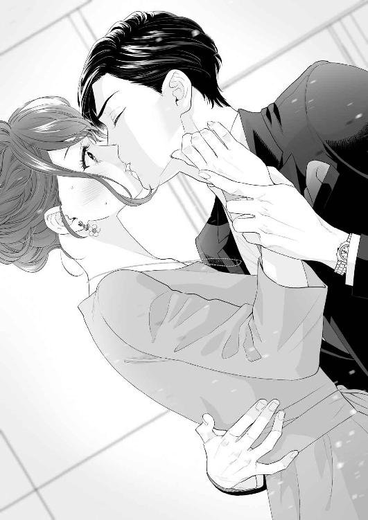
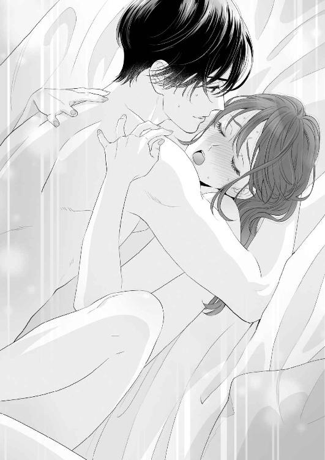
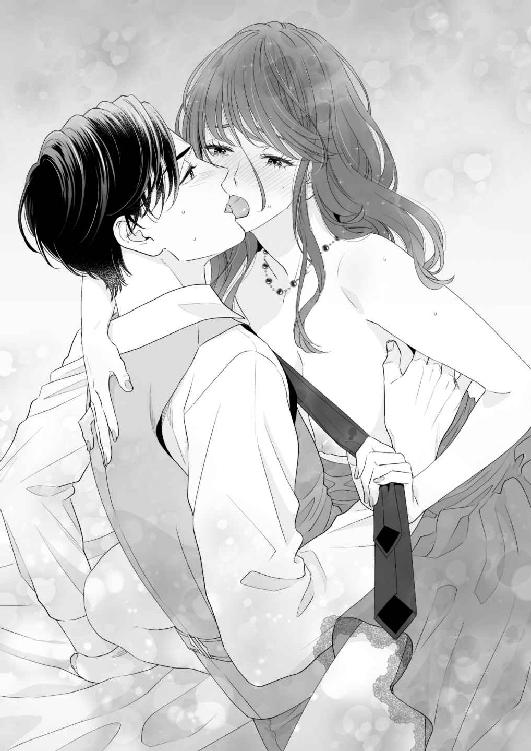

| お見合い相手が弊社CEOだなんて聞いてません! (LUNA文庫) | |
| 柿本 悠理 | |
| 天海社／LUNA文庫 (2018) | |
お見合い相手が弊社ＣＥＯだなんて聞いてません！
［著］柿本悠理
［イラスト］大橋キッカ
第一章
雨の降る駅前は、休日らしい人の賑わいに活気づいていた。
有名スイーツ店の袋を下げたご婦人、映画館へ向かう若い恋人たち、人気の店舗に並ぶ親子連れ。
劇場が立ち並ぶ日比谷の日曜日は、空がぐずついている時でさえどこか華やかな雰囲気に包まれている。
「帰りたい......」
無意識に呟きながら、横山優愛（よこやまゆあ）は湿った傘を再び開いた。
下ろしたばかりのグレーのワンピースに水滴が跳ね、ころころとした水玉になって落ちていくのを見ながら、きっと今日は最悪の日になると予感した。
思えば、今日は朝からついていなかった。
家の玄関を開けると誰が置いて行ったのかわからない飲みかけのコーラが置き去りにされていて、ドアにぶつかり派手にひっくり返してしまった。電車は遅延しているし、改札では二度もＩＣカードが弾かれて、知らない人に足を踏まれた。おまけに、下ろしたてのヒールのせいで、靴ずれまでできている。
しとしとと降る雨は、泣き出したい優愛の心を表しているかのように思えて、深い深い溜息をついてしまう。
（なんで受けちゃったんだろう、お見合い......）
埼玉の実家から珍しく電話があったのが、三週間ほど前。最初は、体調はどうだとか仕事はうまくいっているのかと当たり障りない会話だったのだが、普段あまりこういった連絡をしてこない父が電話口で突然謝罪の言葉を口にした。
「優愛、すまない。一度でいいから、見合いをしてくれないか」
父の中学時代からの古い友人で、今はどこかの有名なデパートで会長をしているという人の息子が、いい歳をして独り身。個人のことだと放っておいたが、父の友人に病が見つかり、最後のおせっかいということで見合い相手を探すことになった。そして、デパート勤務をしている優愛なら、息子と年齢もそう離れてはいないし、話題も合うかもしれない。会うだけでもいいから、会ってくれないか。というのが、父の頼みだった。
父（中学校教頭）に、そんな友人が居たことも初耳だが、見合いなんて考えもしていなかった優愛は、即答した。
「無理よ」
「そこをなんとか！ 源ちゃんには世話になったんだ。形だけでもいい。父さんの顔を立てると思って、な？ そうだ、服を買ってやろう。お見合いには綺麗な衣装が必要だからな。バッグでも靴でも、なんでもいいぞ！ だから、な？ 頼むよぉ、優愛」
情けない声を出す父親の必死の頼みと当日の衣装を買ってやるという下心が、優愛を動かした。
有名ブランドのグレーのワンピースは、腰元でリボンを結ぶような可愛らしいデザインだが、全体的にシンプルなシルエットでこれから冬にかけて活躍しそうな使い勝手のいい一着だ。しっかりと美容室でアップにしてもらった優愛に、とてもよく似合っている。
けれど、いくら父親の頼みとは言え、お見合いなんてものを軽率に受けてしまったことを、今の優愛は反省していた。
（いくら彼氏がいないからって、考えなしに行動しすぎたかな......）
後悔は、後から悔いると書いて後悔。
当たり前のことを思い浮かべ、優愛の心の中はこの雨空のようにどんよりと厚い雲に覆われていた。
＊＊＊
「う、そ......」
国賓を受け入れることもままある老舗ホテルの高級レストランの個室に足を踏み入れた優愛は、持っていたハンドバッグをぼとりと足元に落としてしまった。
反動で開いた口から、スマホやら鍵やらが飛び散っており、父も母も心配そうに拾い上げてくれている。
しかし、そんな状態になっていても優愛は、その場から動くことができなくなっていた。
テーブルには、父の友人、その妻、そして今日の自分の見合い相手が既に座っている。
しかし、その見合い相手の顔を確認した瞬間、優愛は悲鳴を零しそうになった。
「し、しぃ......いぃ......おぉぉ......？」
かろうじてひねり出した声は、間の抜けた響きになった。
そこに座っていたのは、優愛が勤務している百貨店、サワタリデパートの最高経営責任者である佐渡風葺（さわたりふぶき）その人だったからだ。
「お、お父さん！ なんで弊社のＣＥＯがいるの？」
バッグを拾い上げてくれた父の腕を掴み、優愛は声を潜めた。
「言っただろ？ 有名デパートの会長の息子さんだって。お見合い写真も、送っただろ？ 見なかったのか？」
確かに、メッセージアプリに何か資料のようなものが来ていたような気がするが、どうせ断るつもりのお見合いだと確認すらしていなかった。
それが、まさかこんなことになってしまうなんて、予想もしていなかったからだ。
「いやぁ、たっちゃん。今日は来てくれてありがとう。優愛さんも、大きくなったねぇ。おじさんのこと覚えてる？」
サワタリデパートの現会長である、佐渡源五郎氏が、満面の笑みを浮かべて近づいて来た。
「い、いえ......申し訳ありません。会長には、入社式の際お会いしたのが最後だと」
「あー、覚えてないよねぇ。そうだよねぇ。昔はねぇ、たっちゃんは家族でうちによく遊びに来てくれてたんだけど、最近はとんとご無沙汰だったからねぇ」
「ほんと、久しぶりだなぁ源ちゃん。変わってないなぁ」
人の良さそうな会長と自分の父親は、同窓会のように盛り上がっている。
母は母で、会長の奥様とにこやかに挨拶を交わしている。
完全に置いてけぼりの状態でちらりと顔を上げると、ＣＥＯと目が合った。
椅子から立ち上がり、ずんずんこちらに近寄って来る。
いつも壇上やメディアで見るような、黒いスーツに身を包みしっかりと髪をセットした姿は、間近で見るとそこにいるだけで威圧を感じた。
じろりと高い視点から無遠慮に見下され、優愛は思わず売り場で浮かべるのと同じ笑顔を作った。
「......お前、俺のこと覚えてるか？」
「え......？」
意味がわからず首をかしげていると、不機嫌そうな風葺の眉間に、より一層深い皺が刻まれた。
（まずい、言っちゃいけないことを言ったかしら......）
なんとか脳みそをフル回転させ、記憶を掘り起こしてみる。
しかし、売場担当の一般社員とサワタリデパートの最高経営責任者との間に接点があったという記憶は、優愛の中には一ミリも刻まれていなかった。
せいぜい新年の挨拶や、テレビや雑誌に取り上げられた時に見かける、そういった一方通行の認識しかない相手だ。
「すみません。どこかで、お会いしましたか？」
思い当たる節がないのだから、もうそう答えるしかなかった。
しかし、優愛の返答に不快を更に強めたらしい風葺は、あからさまにため息を吐くと、父と楽しそうに会話をしている会長に向き直った。
「親父様。あんたの言う通り、会うだけは会った。俺は仕事があるから社に戻る」
言い放たれた言葉に、会場の空気が凍りついた。
「な、何を言う！ まだ立ち話しかしてないだろう！」
佐渡会長は、瞬間湯沸かし器のように顔を真っ赤にして叫んだ。
しかし、そんな佐渡会長の言葉を遮るように風葺はスマホを取り出すと、電話をかけ始めた。
（何、この人......）
確かに、自分ものりのりで見合いに参加したわけではない。服を買ってもらうという打算があった。
しかし、父の手前会うだけの見合いを引き受けたのは、父の友人が病気であるということを知ってしまったからだ。
独り立ちしてよくわかった。両親のありがたみ、今まで自分に向けてくれた愛情、そしてそれは年を追うごとに、親は先にいなくなるという現実を突きつけてくるようだった。
自分の両親は今のところ健在だが、いつまでこんな風に一緒に出かけたりわがままを言えるかわからない。
社会に出てからは、より強くそう思うようになった。
見合いの話が出た時点では、見たことも会ったこともないどこかの会長という認識だったが、そんな断片的な情報でも病気で気弱になっていると聞けば多少なりとも胸が痛んだ。
だからこそ、今日は嫌だと思いながらここまでやって来たのだ。それなのに。
会場の実の息子である佐渡風葺の態度に、優愛は苛立ちを募らせている。
「では、失礼」
風葺は手短に挨拶を済ませると、振り返ることもなく本当に部屋を後にしてしまった。
残された母はおろおろと戸惑うばかりで、父は今にも火を噴きそうな佐渡会長をなだめるので必死だ。
（ああ、もう......！）
優愛は閉まりかけた扉を掴むと走り始めた。今ならまだ間に合うはずだ。あの慇懃無礼なＣＥＯにひとこと言ってやらないと気がすまない。優愛はそう思った。
＊＊＊
「待って下さい！」
広いエレベーターホールの前で、優愛はスマホをいじる風葺を掴まえることに成功した。
急に腕を掴まれ、風葺はあからさまに不快を顔に浮かべている。
「何か用か？」
「何か用か、じゃないです！ あんな形で部屋を出て行くなんて、お父様の気持ちも考えてあげて下さい！」
風葺は一瞬怪訝な表情を見せると、小さく息を吐いた。
「なんだ？ 君は、親父に会いたかったのか？」
「なんでそうなるんですか」
「今日の主役は、俺と君のはずだ。それなのに、なぜ真っ先に親父の心配をする？ やはり、ＣＥＯより会長の方が、媚びを売りたくなるものか？」
ほとんど初対面の相手に、なぜそこまで蔑まれなければならないのだろうか。
相手が相手なだけに、声を荒げることだけは我慢できるが、一方的に向けられる悪意に平然としているのは大きなストレスだった。
「意味がわかりません......会長とかＣＥＯとか、そんなの関係ありません。失礼ですが、佐渡さんのお父様はお体の調子が良くないと伺いました。だから、今日のお話しをお受けしたんです。そんな風に言われる謂れはありません」
きっぱりとした言葉に、風葺の眉間の皺が僅かに和らいだように見えた。
「お見合いをしに来たんじゃないのか？」
「どちらかというと、親孝行です。相手がＣＥＯだって気づいていれば、そもそも来ることもなかったと思いますけど」
「それは、俺と見合いするのが嫌ってことか？」
「そんなこと言ってません！」
なぜこうも話が噛み合わないのだろう。
風葺が向ける悪意の意味も、彼の持つ真意もまるでわからない。
こう言ってはなんだが、目の前にいるのは大人の格好をした子供のようにさえ見えて来る。
このまま言い合っていても、時間の無駄だ。それに、失礼に失礼を重ねたような相手でも、自分の務める会社の一番偉い人を相手に、これ以上失礼なことを言う気にはなれなかった。
「とにかく、ＣＥＯもお父様のお気持ちをもう少し考えてあげて下さい」
「親父親父って......うるさい女だな、お前は」
「え......っ？」
苛立つ声と共に伸びて来た腕が、私の手首を捕える。
あたたかくて大きな掌が肌を包み、強い力で引き寄せられた。

「っ......！」
傾いた体を支えるように、風葺の右腕が腰に回される。
（何、これ......？）
驚く間に、唇の表面が何かで覆われた。柔らかくてあたたかなその感触が、風葺の唇であると認識した瞬間、優愛の顔は火が出そうなほど真っ赤に燃え上がった。
「......っ！ ......！」
叫ぼうと口を開くと、ぬるりとした舌が滑り込んで来る。
（こ、れ......キス......!?）
ミントの香りがする舌先が、震える舌をつついてくる。
近すぎる接触のせいか、風葺の動きのひとつひとつに濡れた水音がついて回って、直接鼓膜を嬲られているような錯覚を覚えた。
「や......っ！ やめて下さい！」
痺れる意識を奮い立たせ、なんとか両腕を伸ばし風葺の体を突き飛ばすことに成功した。
「なっ、こ......っ！ セクハラですよ!?」
なんとか言葉にできたのは最後だけで、あとは興奮と混乱で息に無様な味付けをしたような声になった。
渾身の抗議に、風葺は冷静に、かつ意地悪な笑いを浮かべていた。
「お前、怒ってる顔が可愛いって言われたことないか？」
「ありません！」
「じゃあ、今俺が言ってやるよ。お前の怒ってる顔、気に入った」
「え......、ンッ......！」
再び触れた唇が、ちゅっと音をたててすぐに離れていく。
「カジュアルにキスをしないで下さい！ ここは欧米じゃないんですよ!?」
「挨拶だって、唇にはしないだろう普通」
「え、そうなんですか？ 私、アメリカの人ってみんなむちゅむちゅしてるのかと思ってました」
「......お前、本当に面白いな」
感心されている場合ではない。
過激なセクハラに対して、あまりにも軽い言動に優愛の中で怒りが爆発している。
しかし、相手は会社のおエライさん。ここでキレては社会人失格だ。証拠を集めて訴える。それが大人のやり方である。
「お前、恋とかあんまりしたことないだろ？」
冷静になろうとする優愛に、風葺は攻撃の手を休めるつもりがないらしい。
「だーかーらー！ それがセクハラだって言ってるんですよ！」
無理だった。あまりにもナチュラルに放たれるハラスメントの数々に、優愛の中の社会人の仮面がずるずるに剥かれていく。怒りすぎて目には涙まで溜まって来た。
しかし、こちらの感情に反して目の前の風葺は実に楽しそうにニヤついている。
それがより一層、優愛の心を嵐のようにかき乱した。
「気に入った。お前に、恋を教えてやるよ」
「は、はぁ......？」
その時、風葺の背後でエレベーターの扉が開いた。
ジャケットの襟を正しながら、風葺はエレベーターに乗るとニタっと笑って扉の中へ消えていった。
上部のパネルが、エレベーターの下降を示していく。
（恋を、教えるって......？ 何......？）
取り残された優愛は、度重なるハラスメントにただ呆然と立ち尽くすことしかできなかった。
第二章
白いラインが１本首元に入った黒の制服ワンピースを着て髪をアップにセットすると、今日も一日が始まるのだと気持ちが切り替わった。これは自分の戦闘服だと、背筋が伸びていくのがわかる。
十時の開店時間と共に、優愛はぴしりと頭を下げた。
月曜日のフロアには、ひりつくような緊張感が漂っている。
新宿に本店を構える老舗百貨店、サワタリデパート。一階フロアに常設されているコスメブランド・アクアルーで、優愛はサブマネージャーを担当している。
仕事は、お客様をメイクで笑顔にすること。美容部員だ。
「あの、すみません......」
本日最初のお客様は、眼鏡をかけた黒髪の女性だった。年齢は二十代前半。恐らく、優愛より三つほど年下であろう女性に、今日一番の笑顔を向ける。
「何かお探しですか？」
とにかく優しく、あなたの味方になりたいと心を込めて返す言葉に、お客様は緊張した面持ちで拳を握りしめている。
「あの、私、お化粧をしたことがなくて。もうすぐ就職活動なので、それまでに練習したくて......何が必要かもわからなくて......」
優愛の見立て通り、女性は大学二年生くらいのようだ。眉は整えていて清潔感は感じられるが、他は日焼け止めとリップだけのシンプルなメイクだ。
今日は少し先の扉を開いてみたいと、勇気を出してここに来てくれたらしい。そういうお客様を前にすると、優愛はいつも以上にやる気が出て来るタイプだった。
「ありがとうございます。是非、私にお手伝いをさせて下さい。どうぞ、こちらへ」
カウンター席へ案内すると、女性は慣れない様子で背の高い椅子に腰を下ろした。
（肌、綺麗......明るい色が似合いそう。どんな顔になりたいのかな？ よしっ！）
ケープをかけ前髪を止めると、優愛の本気の時間が始まった。
肌の診断、提案、お客様の希望を聞き、お客様が目指す美を実現する。それが自分の仕事であると優愛は考えている。
子供の頃から、絵本が好きだった。物語の中で、プリンセスが幸せになる。そんなキラキラした世界に憧れた。
けれど、実際の優愛の家は、森の中にひっそりと佇む小屋でも、南瓜の馬車が来てくれるような城でもなく、日本の二階建て鉄筋コンクリート一軒家で、幼いながら自分はプリンセスにはきっとなれないと諦めていた記憶がある。
優愛の心が変わったのは幼い頃、確か小学校二年生くらいの時。父の知り合いの家のパーティーに招待された時だ。
普段は地味なシャツとスカートしか身に着けない母が、ブルーのドレスに身を包み、しっかりとメイクをしているのを見た時、まるで魔法にかけられたようだと感動した。周囲の女性客を見回しても、皆思い思いのヘアスタイルやメイクで華やかにパーティーを彩っている。
これは、魔法だと優愛は思った。いつか大人になったら、自分もこんな魔法を使ってみたい。そんな憧れを抱いた。それが、優愛が今の仕事に就いた原点だった。
「これが、私ですか......？」
鏡の中に映った自分の姿に、女性は目を輝かせた。
ワントーン明るくなった肌、薔薇のような頬、唇に乗せられたラメは上品な大人を演出している。
「就活ではラメを使うことはないかもしれませんが、普段のメイクならこれくらい華やかにしてもお客様は似合うと思います」
「すごい、顔が明るくなりました......嘘みたい......」
嬉しそうなお客様を見ていると、この仕事をやっていて良かったという充実感がこみ上げて来る。
「お客様は肌が大変白くていらっしゃるので、ファンデーションが必要ないくらいでした。どうしても使いたいという時は、薄く薄く伸ばしてあげるのがいいと思います」
「こんなに変わるんですね。嬉しい。あの、今日はこの下地と......グロスを買って帰ります」
「ありがとうございます。ただいま新しい商品をご用意しますね」
ストック置き場に入り商品を探していると、後輩の戸川夏美が近づいて来た。
同じ制服に身を包んだ後輩は、優愛よりほんの少しだけ明るいヘアカラーでアップにしている。髪色は明るくしすぎないよう、会社の規則で決められている。
本当はもっと明るくしたいけどと言う夏美には、今の控えめな明るいブラウンカラーがよく似合っていると優愛は思っていた。
「横山先輩、さすがですね。平日アサイチで新規のお客様ゲットですか？」
「おはよう、戸川さん。たまたまよ。今日は天気がいいから、朝から流れが来てるわよ」
今日の天気は快晴。秋の涼しい風の中に、夏が戻って来るような気配さえ感じる。昼頃にはきっと忙しくなるだろうと、優愛は経験から感じていた。
「よーっし！ じゃあ私もはりきってハンドアウト行ってきます！」
試供品が入ったポーチを腰元に装着し、夏美は売場へと戻って行った。
後輩が楽しそうに働いているのを見ると、嬉しくなる。それは、新しいお客様に喜んでもらえた時と同じ高揚感だった。
（もうすぐコフレの予約も開始するし、年末のイベントに向けて売上ももう少し意識していきたいな）
秋から冬にかけては、新商品の発売と平行して様々なイベントや限定アイテムが出て来るため、売場もいつも以上に活気づく。
サブマネージャーとして、管理や勉強に力を入れて、お客様にとってスタッフにとってより良い売場づくりを目指したい。
辛いことや苦しいこと、頭を抱えることも多いけれど、優愛は今の仕事が大好きだった。
「ありがとうございました」
会計を終えたお客様を出口まで見送ると、試供品を持ったままの夏美が再び近づいて来た。
「見て下さい！ 横山先輩！ ＣＥＯですよ！」
その単語に、優愛はぎくりと身構えた。
顔を上げると、メインエントランスからまっすぐこちらに向かって来る、スーツ姿の男が居た。
一見黒にも見えるダークグリーンのスーツに、同じく緑っぽいシャツと真っ赤なネクタイを合わせた男に、昨日の嫌な記憶が蘇って来て、優愛は顔をしかめた。
「なんでＣＥＯがこんなところから出社して来るの......」
従業員専用の通路があるにも関わらず、売場の真ん中を練り歩いて行く意味がわからない。
頭を抱えそうになる優愛に、夏美は不思議そうに首をかしげた。
「あれ？ 横山先輩知らないんですか？ ＣＥＯは毎朝ああやって、開店後に売場を見てからオフィスに上がるんですよ」
「そうなんだ。全然知らなかった......」
興味がない情報というのは、ここまで無関心になれるものかと優愛は少しだけ反省した。
「やっぱいかっこいいですよねぇ、うちのＣＥＯ。背高いし、イケメンだし、お金持ちだし。はー。ＣＥＯと付き合いたい！」
「何言ってるの......」
確かに、佐渡風葺という人間は、一見すると大変見目麗しい。きりりとした眉に整った鼻筋は、モデルと言っても遜色ないほどはっきりとした顔立ちで整っている。
スーツを着こなすバランスのいい体躯は、ＣＥＯというよりもスポーツ選手や俳優といった派手な雰囲気とオーラを放っているように見えた。
（あんなことがなければ、私も素直にかっこいいと思っていたかもしれないけれど......）
ぼんやりと眺めていると、宝飾品が並ぶエリアの前で風葺が顔を上げた。
（うっ......）
また、あの笑顔だ。
ニヤリと口元だけを歪め、人を蔑むように目を細める。あの組織とかマフィアのボスのような、悪人の笑顔がはっきりと優愛に投げかけられている。
目が合うと同時に、優愛は反射的にお客様にするようなお辞儀を返す。
隣で見ていた夏美も、一歩遅れて同じように頭を下げた。
「はー、やっぱかっこいい！」
「戸川さんはああいうのがタイプなのね」
「社内にファンは多いんですよ？ 横山先輩は、やっぱりあれですか。めちゃくちゃかっこいい彼氏がいるから興味ないとかそういう感じですか？」
「へ？」
突拍子もない質問に、間の抜けた音が唇から漏れた。
「なんでそんな話になるのかしら？」
「えー。だって横山先輩、この手の話に絶対乗ってこないし。やっぱり、すごい彼氏がいるんじゃないかって噂になってますよ」
「すごい彼氏って......」
「だって、横山先輩は私たちの憧れの先輩ですもん！ 美人だし、技術もあるし、教え方も優しいしわかりやすいし、女の私でも大好きなんですよ？ 男の人は放っておきませんよ！」
「ふふっ、ありがとう。ほらほら、お客さんが来てるわよ？ おしゃべりはそのくらいにして、行ってらっしゃい」
話を切り上げ、なんとか後輩を売場に送り出すことに成功した優愛は、再び宝飾品エリアの方へ視線を向けた。
風葺の姿は、既にそこにはない。
（良かった......）
正直なところ、ほっとした。あのまま、苦手な笑いを向けられるのは居心地が悪いし、後輩や同僚に詮索されるのも避けたかった。
同性の同僚の口に戸は立てられない。特に社内でも人気らしいＣＥＯとお見合いをしたなどという話が漏れたら、明日からまともに業務をこなすこともできなくなるだろう。
『先方さんが、あなたのこと気に入ったから是非このお話しを進めて下さいって仰ってるのよ』
昨日母からかかって来た電話は、絶望と波乱を封じ込めた破壊力を内包していた。
どうせ断ると高をくくったお見合いは、まさかの続行体勢に持ち込まれてしまった。
こんなことならば、帰宅した瞬間疲れで寝落ちてしまう前に、先に断りの電話を入れれば良かったと後悔したが後の祭りだった。
『気乗りしないかもしれないけれど、お父さんもお母さんもずっとあなたの側に居てあげられるわけじゃないからね。これもご縁かもしれないから。本当に嫌だったら、デートしてちゃんと断りなさい。ね？』
以前よりも歳を感じる声で母に念押しされると、それ以上は何も言えなくなってしまった。
それにしても、佐渡風葺の外堀を埋める力は絶大だ。両親にこんな風に言わせるような会話があったらしいということが、母の話し方から感じられた。
しかし、社内の人間と一時的にでもそんな関係になってしまったことは、優愛にとってリスク以外の何ものでもなかった。
お見合いのことは、そしてキスをされたことは、社内の誰にもバレてはいけないと思っている。
特にこの件に関わらず、恋愛において自分の経歴に深く探りを入れられることだけは、避けたかった。
優愛には、誰にも言いたくないタブーがひとつだけあった。それは。
「横山さん。今月の売上目標についてなんだけど、今いいかしら？」
マネージャーの木場に声をかけられ、優愛は明るく返事をした。
今週も始まったばかり。背筋を伸ばして、優愛はミーティングルームへ向かった。
＊＊＊
夜の新宿は、まるで昼間のように明るさと喧騒に満ちている。
ＬＥＤライトの街頭がきらめく街には、多くの観光客や学生たちがひしめていていた。
華やかな夜の空気は、一日立ち仕事をしていた疲労には刺激が強すぎる。
ぼんやりとそこに立っていると、多くの人の数だけドラマがあり、ひとりひとりが主役なのだということを忘れてしまいそうになる。
そして、自分が主役になるということは、遠い過去に置いて来た気がすると優愛は思う。
仕事が終わってしまえば、そこにあるのが空っぽの体だけのような気がして、優愛は仕事終わりのこの瞬間、どうしようもなく孤独になる時がある。
制服を脱ぎ、黒のワンピースに袖を通し、髪を下ろせばそこにはただの横山優愛がいる。
時折思う、仕事が大好きで充実していると感じるけれど、自分から仕事を取ったら逆に何が残るのだろうと。
（本当、この時間って苦手......）
今日も雑念を振り払って、帰宅しよう。東京と神奈川の境にあるマンションまで電車で帰り、スープとおかずだけの夕飯を食べ、スキンケアにほんの少しだけ時間をかけて本を読もう。
恋人がいなくても、大人の夜は楽しいのだ。
そう思い、従業員通用口から一歩踏み出した瞬間、前の通りに黒い車が横付けされた。
「優愛」
「げぇっ」
およそ大人の女性が外で出していいものではない類の音が、優愛の口から自然と漏れた。
後部座席のウィンドウから手を挙げたのは、風葺だった。
「仕事、終わったのか」
「そうですけど......」
「乗れ」
有無を言わさぬ発言に、苛立ちが募る。
「乗りませんよ。なんで私が......」
「いいのか？ こんなところでまごついていたら、社員に見られるぞ」
それは、何がなんでも絶対に避けたい状況だ。
それをわかった上で風葺がここで待っていたのだとしたら、まんまと策略にはまったようでそれはそれで腹が立つ。
しかし、今はたまたま人の少ない時間帯だが、退勤時刻に変わりない。いつ誰がやってくるかわからない状況で、もめるのは得策ではないと判断した。
「......わかりました」
諦めたように優愛が返事をすると、運転席から背の高い初老の男性が下りて来て、すぐに後部座席のドアを開けてくれた。
「失礼します」
先程切ったばかりの仕事スイッチを再びオンにして、優愛はカフェオレ色のシートの上に滑り込んだ。
運転手が戻り、車がゆっくりと走り始める。
窓の向こうに流れる景色を見つめながら、今夜はきっと最低の夜になるだろうと優愛は確信した。
＊＊＊
カウンター席に腰を下ろすと、目の前の揚場から優しいごまの香りが漂って来た。
白い調理衣に身を包んだ職人が、細い銀の揚箸を使って次々に天ぷらを揚げてくれる。
手元には梅や抹茶、柚子が混じった数種類の塩が置かれている。
（緊張する......）
カウンターに座る客は、優愛と風葺の二人だけだ。
赤坂の中心部に位置する老舗の天ぷら屋で食事をする機会が、自分にあると思っていなかった優愛は、箸や食べ方などのマナーができているかどうかばかりに意識が向いていた。
「緊張してるだろ？」
グラスに入ったビールを傾けながら、風葺は楽しそうに言葉を投げかけて来る。
ジャケットを脱ぎ、リラックスした様子でビールを美味しそうに飲むＣＥＯには、きっと滑稽に見えているのだろうと優愛は直感的に理解した。
「......そりゃあ、そうですよ」
ここまで環境や経験値に違う相手に、取り繕っても仕方がない。
半ば諦めるような気持ちで投げやりに返事をすると、空になったグラスに風葺はすぐにビールをついでくれた。
あまりの緊張に、乾杯のあとすぐに飲み干したグラスには、黄金色の美しい液体がなみなみと注がれている。
今度は飲み干さないように優愛は慎重にひと口を含む。
苦いアルコールは、どこで飲んでも心を解してくれるような安らぎを感じた。
「こんなお店で食事をしたことないので、作法がわからないです」
「うまいものはうまいって言って食えばいいんだ」
そう言って風葺は、揚げたてのトマトの天ぷらを口に放り込んだ。
はちはちと口元を動かす男は、こうして隣に並んで見ているとどこにでもいる普通のお兄さんのように見えた。
優愛は、男に続くように緑の天ぷらを口に入れた。
ピリリとからい獅子唐が、さくさくと弾ける。高い天ぷらは、こんなにも軽い口当たりなのかと感動してしまう。
「......おいしい」
「そりゃ良かった」
思わずこぼれた感想に、風葺はふふっと息を漏らした。
（えっ......）
声に出そうになるのをなんとか堪え、優愛は隣に座る男を見つめた。
その小さな微笑みは、昨日お見合い会場で見せた時や、今朝売場で見せた意地悪な気配を一切感じさせない、柔らかな微笑みだった。
「......なんだ？」
風葺は、一瞬の呼吸を察知してすぐ様見慣れた、眉間に皺を寄せた顔をこちらに向けた。
「何も、言ってません......」
「お前は、わかりやすいと言われたことはないか？」
「ありませんけど」
自分で言うのもなんだが、比較的ポーカーフェイスは上手い方だと自負している。
お客様とのやり取りが多い仕事だ。接客中に違和感を相手に覚えさせるようなヘマはしないよう、特にサブマネージャーに昇格してからは気をつけている。
しかし、そんな優愛の精一杯でさえ、老舗デパートをまとめ上げる最高経営責任者の前では付け焼き刃ほどの効力しか発揮しないのだろう。
無駄に取り繕うのも馬鹿馬鹿しくなって、優愛はグラスのビールを一気に煽った。
その様子に、風葺は口元を押さえて笑っている。言わなくても、何もかもお見通しというわけだ。まったくもって面白くない。
「面白いな、お前」
にやにや笑いながらこちらを見つめる風葺の視線が、やけに甘くてどういう反応をすればいいのかわからない。
（恋を教えるって、そもそもなんなのよ......）
昨日、風葺に言われたことが頭の中で引っかかる。
別に教えてもらいたいなんて口にしていない。風葺が勝手に言いだしたことだ。そもそも、何をどうすれば恋を教えるということになるのか、恐ろしくて聞けない。
「私は、面白くないです......」
苦し紛れに口にした言葉に、風葺はなぜか機嫌を良くして日本酒のメニューを持って来て欲しいとスタッフに声をかけ始めた。
「優愛、日本酒はいけるか？」
呼び捨てにしてもいいと承諾した覚えはないが、拒んだところで聞いてもらえないであろうことを優愛は察し、そして諦めた。
「......辛口のものが好きです」
「どうやら俺たちは好みが合うらしいな」
「ＣＥＯも......辛口がお好きなんですか？」
「風葺でいい」
「え......」
「接待じゃないんだ。その呼び方はやめろ」
そう言われると確かに接待ではないのだが、相手は自分の勤める会社のおエライさんだ。急にそう言われても、どう言えばいいのかわからなくなってしまう。
しかし、風葺はこちらの動揺と困惑を嗅ぎ取ったのか、ふいに顔を近づけると耳元に吐息をかけた。
「呼べよ。お前には、俺の名前を呼んで欲しい」
「わ、わかりましたから！ 近いです！」
風葺の胸元に手をあて押し返すと、妙に真剣な視線がこちらに投げかけられた。
何も言葉を口にしなくても、向けられた期待を全身に感じる。名前を呼べという圧力が、風葺の体から放たれているようだ。
接近に動揺したとはいえ、言うと口にしてしまった以上ここで引くわけにはいかないと感じた。
それが、今日までひとりで立って生きてきた優愛のプライドだった。
「......佐渡さん」
「それは苗字だろ」
「ＣＥＯよりは名前に近いかと」
「おちょくってんのか？ 下の名前以外認めない」
なぜこの人に認めてもらわなければならないのだろうと苛立ったが、かさりと目の前に置かれた揚げたてのイカの天ぷらを見ていると、闘争心が萎えていくのがわかった。
「......ふ、ふぶき、さ......ん......」
何か喉の奥に詰まったような発音で、ひねり出すように声にした。
正直なところ、相手はハラスメントに抵触しまくった人間だ。そんな相手の言いなりになること自体が、優愛にとって屈辱だった。
「え......？」
ふいに、頬に何かあたたかいものが当たった。
それが風葺の指先であると認識した瞬間、優愛の顔が左右どちらにも動かすことができなくなり、がっちりと固定されてしまった。
近づけられる瞳の中に、自分自身の顔が映っているのが見えて視線を逸したいのに固定されていてうまくいかない。
（これは......まずい、気が......）
吐息がかかりそうな距離に、整った顔の男がいる。
間近で見てもきめ細やかな美しい肌を持つ男は、目の下だけが少し濃い色をしている。そんな小さなことに、嫌でも気付かされてしまう。
このままでは、唇が重なってしまう。そんな緊張の中で、優愛は息をのんだ。
「よくできました」
風葺は掴んだ頬を指先でむにむにと挟み込むと、すぐに顔を離した。
（からかわれた......）
そうめんを揚げたという天ぷらが出され、風葺は酒を日本酒に変えた。
行き場のなくなった熱が、頬にまだくすぶっている気がする。
からかわれたのだとわかっているのに心臓がうるさくて、自分の感情を押さえるようにかじりついた天ぷらは熱くて、口の中でじゅっと音をたてて消えていった。
第三章
美味しい食事と、いいお酒があれば、大抵のことはうまくいってしまうのかもしれない。
優愛が自宅マンションにたどり着いたのは、午後十一時を過ぎる頃だった。
老舗百貨店の最高経営責任者というのは、知識も豊富で相槌もうまい。
時々からかうような仕草が気にはなったが、当初の予定よりも上機嫌で優愛は帰路に着くことになった。
「今日は、ありがとうございました。ちょっとだけ、楽しかったです」
車から降りようとすると、風葺はわざわざひと足先に降りて後部座席のドアを開けてくれた。
こういうふとした気遣いに、今日は驚かされる場面が何度もあった。
口と態度は悪いけれど、学ぶところも多い。そう感じさせる細やかさが、彼にはあった。
「ちょっとかよ」
口元を歪めるだけの笑いも、数時間前と今では印象が変わった。同じ形のはずなのに、少しだけ柔らかいものに見えた。
「まあいい。俺も、久しぶりにプライベートで人と食事をしたが、存外悪くなかった。ありがとう」
「いえ......それじゃあ、失礼します」
そう素直に言われると、どう反応すればいいかわからない。
ただ、自分でも不思議なほどに楽しい夜だったということだけは確かだ。
今日は、ほんの少しだけだけれど、自分が主役になったような、そんな充足感が胸の中にある。
楽しい気持ちのまま、部屋に戻って眠ろう。そう思い、背中を向けた時だった。
「優愛」
「え......？」
名前を呼ぶのと同時に、優愛の手首が掴まれた。
「ん......ッ！」
強い力で引き寄せられると共に、風葺の唇が優愛の唇に重ねられた。
むせ返るようなコロンの香りとアルコールの気配が、優愛の心臓をかき乱す。
「やっ......離し......んんっ!?」
離れようと顔を背けたが、すぐに風葺の手が自こちらの自由を奪ってくる。
おまけに。
（舌が......!?）
反論を口にした隙にぬるりと熱い風葺の舌が滑り込んで来て、優愛は完全にパニックになった。
柔らかな他人の舌が、こんなにも熱を持っているなんて、風葺に出会うまで知らなかった。
キスは、初めてではない。けれど、最後にしたのは十八歳。あの時は、こんな風になぞるように探るように唇を重ねるようなキスではなかったはずだ。
（頭が、ぼーっとする......）
こちらの心音が伝わっているのか、心臓の音に合わせるように風葺の舌が歯列をなぞっていく。
小さく吐き出す呼吸以外は、許してくれる気はないらしい。
諦めるように体から力を抜くと、引き寄せられていた腕の力も優しくなった。
その代わり、今度は腰元から撫でるように掌がゆっくりと背中の上を滑っていく。
「ん......ッ」
くすぐったいような、それでいて体の内側がざわざわするような、不思議な熱が灯っていくのがわかる。
知らなかった、キスがこんなに心を震えさせるものだったなんて。
「......はぁ」
唇が離れると、頭の中に一気に酸素が流れ込んでいくのがわかった。
至近距離で見つめる風葺は、途方もなく美しい形をしていると思った。
「なんでキスするんですか！」
「言っただろ？ お前には、恋を教えたい」
「だからって、なんでいきなりキスなんて......」
「まずは高揚感が大事だろう？ 手っ取り早くどきどきさせるにはこれが一番だ」
「手っ取り早くって......」
「とりあえず、俺に会ったらドキドキするようになれ。話はそれだから」
「ハラスメントですよ！ 大体、なんで私にそこまで恋を教えたいんですか？」
偶然が重なったとは言え、風葺と優愛は同じ会社の人間というだけの共通項しかない。おまけに、相手は自分のような一般社員とはわけが違う。日本を代表する老舗デパートのトップ。
そんな人が、なぜ自分に恋を教えるなどと言い出すのか理由がわからない。
戸惑う優愛に、風葺はあのニヤリと口角を上げる嫌な笑いを浮かべた。
「仕返し、だ」
「仕返しって一体......んっ」
言い終わるより先に唇が重なる。
今度は挨拶のような触れるだけのキスを残し、風葺の体が離れた。
「おやすみ、優愛」
ひらひらと手を振り、風葺はじっとその場に佇んでいる。
「......おやすみなさい」
仕方なく背を向け、エントランスをくぐりオートロックの向こう側へ入って振り返ると、風葺の影がようやくこちらに背を向けた。
（入るまで、待っててくれたのかな......）
傲慢と優しさが両極端に存在する人。佐渡風葺とは、そういう人間なのかもしれない。
（なんで、こんなにドキドキしてるんだろう......私......）
初対面の時よりも少しだけ彼の優しさに触れた気がして、優愛は胸に広がる軽やかな感情に戸惑うことしかできなくなっていた。
＊＊＊
佐渡風葺、三十二歳。明治時代より続くサワタリデパートの現最高経営責任者。先代社長が電撃的な早期引退を表明し、最年少ＣＥＯとして名を馳せた。というのは、表向きの理由で、実際はもっとどろどろとした事情が存在する。
先代である源五郎氏は、元々経営畑の人間ではなかった。佐渡家の五男として産まれた源五郎氏は、末っ子として自由奔放な若者時代を過ごし、一時はミュージシャンに憧れ上京した。
サワタリデパートを継いだ長兄が亡くなり、様々な事情も絡み源五郎氏が社長になったまでは良かったが、バブル経済崩壊後デパートの売上は右肩下がり。一時は閉店の危機と噂されるまでになった。
そんな時、傾きかけたサワタリを救ったのが、当時二十八歳だった源五郎氏のひとり息子である風葺だった。
大学を出て銀行に就職した風葺は、父を助けるためサワタリに再就職を決意。経営に着手して僅か一年で傾きかけていたデパートを立て直し、二年後には歴代最高の売上を達成。今や若者から年配層まで幅広い客層の支持を受ける百貨店として、その名を轟かせることになった。
昨年、早期引退を表明した先代から今の立場を引き継いだ。確か、その時は大々的に報道され連日マスコミが店に押し寄せていたはずだ。そういう記憶は薄ぼんやりと優愛の中にあったが、当時はほとんど興味がなく、テレビの向こう側のニュースだと他人事のように見ていたのだけれど。
「......経歴だけで、胸焼けしそう」
そっとパソコンを閉じると、優愛はクロスを手に商品の手入れに向かった。
開店直後の店内で、出勤表を確認しながらふと気になって佐渡風葺の名前をインターネットで検索してみた。
様々なメディアへの出演、インタビュー記事からまとめまで、予想以上の情報量にめまいがしそうになった。
（あれだけ外見が派手だと、経済誌でも目立つのかもしれないわね......）
もちろん外見的魅力以上に実力も兼ね備えた、伝説のＣＥＯであるということは昨日よりは理解できた。
（若いＣＥＯだとは思っていたけど、仕事ができる人なのね......そりゃあ社内でもてるはずよ）
理解はしたけれど、納得はできなかった。
いくらすごい人が相手でも、今の自分にとってはやたらとキスしてくる妙な人くらいのポジションなのだ。
初対面の出会いが最悪だと、あとからどれだけいい情報が入って来ても噛み砕くことができないまま、もやもやとしたものだけが胸に残る。
相手の目的がわからないことも、胸の中の不透明さを加速させている原因のひとつだ。
（仕返しって言ってた......私、何かしたことあったっけ？）
不安になって思い返してみるが、ＣＥＯとの接点なんて何ひとつ思い浮かばなかった。
（今度、会ったらちゃんと聞いてみよう......）
とにかく、今日も一日が始まる。
もうすぐ催事場で大きなコスメのイベントも予定されている。各店舗の売上上位のメンバーが集められる、とっておきのスペシャルイベントだ。
売場にも、既にそこに向けた独特の緊張感が走っている。優愛もイベントメンバーに選ばれるためには、今の時期から準備を始めておかなければならない。
気を引き締めて、通常業務をまずは丁寧に。正面に並ぶサンプル品の掃除を終え、顔を上げたその時、事件は起こった。
「横山先輩！ 助けて下さい！」
飛び込んで来た夏美に、優愛はただならぬ気配を感じた。
ほとんどお客様の姿はないが、開店後の店内で声を荒げるなど売場店員としてあってはならない。
ただ、駆け寄る夏美の表情から、それが緊急事態であることは想像ができた。
「何があったの？」
なるべく落ち着いた声で夏美の目を見つめると、夏美にも少しだけ冷静さが戻ってきたようだった。
声を潜めた夏美の言葉に混じる荒い呼吸は、ただならぬ気配を予感させた。
「今、メインディスプレイの確認に行ったら、男性のお客様が暴れだして......」
「なんですって？」
メインディスプレイとは、エレベーターホールの前に設置された展示スペースで、ブランドの新商品が置かれている。
風葺が経営に関わるようになってから、サワタリデパートはデザインや視覚効果にこだわるようになった。
すべてのブランドの目玉商品や新作を、お客様が立ち止まりやすい場所に置いて見てもらうというのも確かＣＥＯの発案だったはずだ。
「警備員を呼びに行ってるんですけど、他の売場の子もパニックになってて。そのお客様、どうやらアルコールを飲んでいるみたいで......」
このような困ったお客様が紛れ込むことは、ままある。
「今、佐藤さんが対応して下さってるんですけど......」
佐藤は、同じフロアにあるコスメブランド・ルージュルージュの美容部員で、優愛の勤めるアクアルーとは親会社が同じという関係だ。
黒髪の長身で、一時期美しすぎる美容部員として広報戦略に駆り出されていたこともあるため、社内に知らぬ者はいない名物社員だ。
何度か本社の定例ミーティングで顔を合わせたことがあるが、はっきりと物を言う気持ちの良い美人だったと記憶している。
「わかった。戸川さんは、売場にある先の尖ったものをしまって。はさみ、ボールペン、スパチュラ。レジ周りも全部確認して」
「わかりました！ 横山先輩は？」
「様子を見て来るわ。あなたはここに居て」
いくつかの売場を曲がり、優愛はまっすぐエレベーターホールへ向かった。
「なぁんだよぉ、おれは客だぞぅ！」
叫び声のする方に目を向けると、展示用のガラスケースがひとつ割れていることに気がついた。
どうやら既に暴れた後らしく、警備員はまだ到着していないようだ。
缶チューハイを手に持った黒いスウェット姿の男は、真っ赤な顔でぶつぶつと何かを呟いている。
「佐藤さん」
怯える店員たちの前で、ひとり頭を下げる佐藤の隣に優愛は立った。
「横山さん、どうして......」
「失礼します、お客様。何かお探しのものはございましたか？」
前に出た優愛に、男は一瞬怯んだが、すぐに優愛を睨みつけた。
「お前らがなぁ、おれのこと客扱いしてねぇのがわかるんだよ！ 目ぇ見りゃわかるんだよ！」
漂って来る強いアルコールの気配に、優愛は笑顔を崩さぬよう努める。
見ると、男性客の腕から肘にかけてばっくりと切り傷ができており、血がぽたぽたとフロアに滴り落ちている。
「お客様、怪我をされていますね。まずは手当てをしましょう。医務室にご案内致します」
「ほっとけよ！ お前みたいな女に何がわかるんだ......責任者を呼べぇ！」
男は、強い言葉を吐きながら片手を振り上げている。
「下がって、佐藤さん！」
思わず前に飛び出すと、男が濁った目つきで優愛を見据えた。
「お前、おれのこと笑ったな......？」
「そんなことはございません。お客様、とにかく手当てをさせていただけませんか？」
「うるさい！ おれに命令するな！」
男は缶を持った手を優愛めがけて振り上げた。
（まずい......！）
優愛は、佐藤をかばうように男に背中を向けた。
「......ッ！」
しかし、目をぎゅっと閉じても、思ったような衝撃はやって来なかった。
「あれ......？」
「......お前、無謀も大概にしろ」
「え......!?」
聞き覚えのある声に顔を上げた瞬間、優愛の頬にぽたりと水滴が落ちて来た。
人工甘味料の香りが、かっちりとセットされた前髪を伝っている。
「ＣＥＯ......？」
グレーのスーツに桃色のシャツ、それに赤いネクタイの結び目が見えた。
そこに居たのは、風葺だった。彼は、優愛をかばい缶チューハイの中身をすべて浴びていた。
「大丈夫か？」
「は、はい......」
なぜ彼がここにいるのか理解できず驚く優愛に、風葺はふっと微笑みを零した。
優愛の無事を確認すると、風葺はくるりと正面の男に向き直った。
「お客様、私がお話しを伺わせていただきます」
「な、なんだ......お前......」
「責任者をご所望とのことで、申し遅れました。私、サワタリデパートの最高経営責任者を務めさせていただいております、佐渡風葺と申します」
はっきりと通る声で告げる風葺に、さすがの男も怯んでいる。
いかにも悪人そうな威圧感のある男に、真正面から睨まれたら生きた心地がしないだろう。
言葉を探す男の前に、ようやく警備員が到着した。
二人組の警備員に抱えられ、男は警備室へと連行されて行く。
緊張感の走る売場に、ようやく安堵のため息が零れた。
「横山さん、ありがとう」
佐藤が、不安そうに顔を上げた。
どうやら、彼女にはチューハイはかからなかったらしい。
「いえ、私は何も......佐藤さんが無事で良かったです」
見ると、離れていたらしい男性秘書が、風葺に駆け寄りハンカチを手渡していた。
「あの、ＣＥＯ......」
声をかえると、風葺はいつものように余裕のありそうな顔で笑った。
「怪我はないか？」
「はい......」
「なら、良かった。では、失礼する」
さっと濡れた顔を拭い、ＣＥＯは従業員通路の方へと姿を消した。
（......あとで、お礼を言っておかないと）
言いそびれた言葉に、優愛はどこか気持ちが浮足立つのを感じた。
風葺に会いに行く理由ができたことが、なぜか嬉しかった。
第四章
専用エレベーターに乗り、９階のボタンを押すと優愛を乗せた箱はゆっくりと上昇していく。
ＣＥＯがいるオフィスがこんな場所にあることも、優愛は今日初めて知った。
朝の事件の噂は、すぐにデパート中を駆け巡った。
展示物に明確な被害が出ている以上、警察の介入もあったせいで、フロアのざわつきは午後になっても未だその余波を残していた。
売場に戻った優愛は、マネージャーにも後輩にも死ぬほど心配され、怒られた。次からは私も連れて行きなさいとみっちり説教を受け、優愛はそれとなくＣＥＯの話題を口にした。
「あの、ＣＥＯにお礼を言いそびれてしまって......あの方には、どうすればお会いできるのでしょう」
優愛は、初めて自分が彼の連絡先を知らないことに気づいた。
まさか、こんな形で連絡を取りたい、取らなければと思うことがあるなんて思ってもみなかったからだ。
マネージャーによると、ＣＥＯは忙しい人でほとんど社内にはいない。
しかし、どうしても伝言を残したいのであれば、秘書室に電話をかけてみるといいのではないかと。
優愛は秘書室に電話をかけ、言伝をお願いしようとした。秘書の男性は、何かを確認し、昼に着て欲しいとＣＥＯが仰っていると伝えてきた。直接会う機会をとってもらえると思っていなかった優愛は一瞬ためらったが、電話越しに秘書を待たせるのもどうかと思い、すんなり承諾した。
こうして優愛は今、風葺のオフィスに向かっているというわけだ。
エレベーターの向こうには、広い廊下が広がっていた。
このフロアは、重役たちが集まる大会議室と秘書室、そして風葺のオフィスがあるらしい。そんなことも今日初めて知った。
秘書室に顔を出すと、風葺の担当である男性秘書が案内をしてくれた。
「失礼します......」
扉を開けると、一面の窓から入る光に思わず目を細めた。
まず、クリーム色の皮ソファとガラステーブルが目に入った。
部屋の一番奥、窓の前に大きなデスクセットがひとつ。ひょろりと長いライトの下には、大きなガラス張りのデスクが置かれている。風葺は、黒い椅子に座りラップトップを開いていた。
「よお、来たのか」
友人に声をかけるように風葺は顔を上げると、秘書を下がらせた。
ＣＥＯだと思うと緊張するが、こういう顔を向けられると自分の知っている知人という感じがして、ようやく肩から力が抜けていくのがわかった。
「突然アポを取っても、会える人間じゃないんだぞ？ 俺は。ありがたく思えよ？」
不遜を絵に描いたような態度で立ち上がった風葺は、朝会った時とは違う真っ白なシャツを着ていた。
（着替えたんだ......）
それは、優愛の中に小さな痛みを運んできた。
「お時間を、取らせてしまって......すみません」
会いたいと言い出したのはこちらではないが、結果的に会う時間をとってもらった形だ。
しおらしい優愛の言葉に、風葺はすっとＣＥＯの表情に戻ってしまう。
「......それで？ 何か用か？」
「さっき、お礼をきちんと言えなかったので。それから......」
優愛はそろそろとメインデスクに近寄ると、小さな包みをガラスの上に置いた。
風葺は怪訝な顔で包みを取ると、セロテープを外していく。
「これは......」
驚いた顔を上げた時、彼はまた友人のような柔らかな表情に戻っていた。
「さっき、かばっていただいて、何かできないかと思って......お礼です」
そこに入っていたのは、下のフロアで買ったブランドもののブルーのハンカチだった。
それは優愛なりに考えた、精一杯のお礼の品だった。
「初めてもらう贈り物が、ハンカチとはな」
確かに、ハンカチには別れを示唆する意味合いも強く、贈り物としては不適切かもしれないという知識はあった。
しかし、今朝の状況を考えるとこれ以上に適切なものが浮かばず、優愛はギリギリまで悩んだ結果、ハンカチを選んだ。
「思い浮かばなくて......ＣＥＯが使わないなら、秘書のあの男性にあげて下さい」
今更ながら、こんなことにＣＥＯの時間をとらせていることが恥ずかしくなってきた。
とにかく、言うべきことは伝えた。これ以上、彼の貴重な時間を消費することはできない。
「では、失礼しました」
優愛は頭を下げると、背中を向けた。
ところが。
「待て」
鋭い声に引き止められ、優愛は足が動かせなくなった。
「こっちに来い」
叱るようなトーンに、優愛はそろそろと振り返った。
椅子の背に背中をもたれさせた風葺は、じっと優愛を見つめている。
低い声で発された言葉は、こちらの意思とは関係なくそうしなければならないと焦る気持ちを優愛の中に運んでくる。
優愛は緊張に顔をこわばらせ、そろりそろりとデスクの裏に回り込んだ。
「何勝手に帰ろうとしてんだよ」
「あ......」
腕を伸ばした風葺が、優愛の右手首を掴み引き寄せた。
バランスを崩した優愛の体は、風葺の膝の上にすとんと座り込んでしまう形になった。
「す、すみません......」
「いいから」
立ち上がろうとする優愛の腰を引き寄せ、横抱きの体勢で落ち着かされる。
「な、何......」
「嬉しかった。ありがとうな」
見上げるような形で告げられたお礼に、優愛は不意打ちを食らった。
（この人......笑うと子供みたいな顔になる）
先程まで厳しい言葉を発していた同じ人物とは思えぬ柔らかな空気に、優愛は戸惑っていた。
心臓が妙に激しく脈打ってうるさいし、なんだか耳まで熱くなってきた。
「でも、さっさと帰ろうとしたのは減点だ。傷ついた」
「傷ついたって......えっ」
未だ胸のざわつきが止まらない優愛に向かって、風葺は自分の親指で自分の唇をそっと拭うような仕草を見せた。
「お礼をしに来たんだろ？ なら、お前からのキスが欲しい」
「......ハラスメントですよ」
「それを言うなら、この体勢が既にアウトだろ？」
確かに、あまりにも気軽に引き寄せられすぎて感覚が麻痺しているのかもしれない。
焦る優愛に、間髪入れず風葺は指先を伸ばして来る。
優愛の唇に、かさついた指先が触れた。
「怪我が、なくて良かった」
吐き出すようにつぶやく言葉は、そこに彼の真意があるように感じられた。
「心配、してくれたんですか......？」
「当たり前だろ、馬鹿」
馬鹿なんて酷い言葉のはずなのに、嬉しいと思うのはなぜだろう。
こんなに優しく暴言を吐かれたことは、過去に一度だってない。
目の前の男の口から発される音には、何か魔法がかかっているのだろうか。人の心を震わせる、そんな魔法が。
「俺がたまたま通りかかったから良かったものの、もうあんな無謀な真似はするな」
「すみません。佐藤さんがひとりで対応しているのを見ていたら、私もなんとかしないとと思ってしまって」
「......お前が人を大事にする姿勢は尊敬している。警備員の到着が遅れた問題点も見えた。今後はこんなことがないよう努める。だから、お前も自分のことを考える余裕を持って行動してくれ。頼むから」
そう言って抱きしめる腕が、あたたかい。
（本当に、心配してくれたんだ......）
風葺のセットされた前髪がほんのり崩れているのは、朝から液体を浴びて直したせいだろうか。
優愛はそっと指先を伸ばし、風葺の頬に触れた。
すべすべと柔らかい頬を撫でると、深い海のようなコロンが強く香った。
思い切って顔を近づけてみると、風葺は静かに目を細めた。
「......っ」
一瞬ためらった動きに、優愛も目を閉じて勢いをつける。
柔らかな唇は、自分から触れるといつもより柔らかく感じた。
触れるだけの口づけを終え唇を離すと、至近距離にあった風葺の瞳と視線がぶつかった。
「......よくできました」
「んっ......！」
近づいた唇が、今度はオープンマウスで侵入して来る。
柔らかな舌先からミントが香り、背中に電流が流れた気がした。
このキスには、意味がない。恋を教えるだかなんだか知らないが、向こうはただの遊びで、からかっているだけなのだ。そうとわかっていても、内側を軽く撫でられると口の中にも性感帯があったのかということを嫌でも自覚させられた。
「んん......」
何度目かのキスは、息継ぎのタイミングも体に教え込んでいくようだ。
僅かな動きに反応し、優愛は酸素を求めて唇を震わせる。
スポーツのラリーやダブルスのような、そんなシンクロを感じた。
「ん......？」
しかし、今日のキスは何かが違った。
（えっ、待って......そこ......は......）
驚いて目を見開いた優愛の前に、瞳を閉じた風葺の顔がある。
唇で唇を齧りながら、風葺の掌が脚の内側をそっと撫でる。
「ンンッ、ン......」
名前を呼ぼうともがく体を、片腕で押さえつけながら風葺のキスが深くなる。
その隙にも風葺の指先が、薄い肌の上を撫でていく。
親指と人差し指の先が、ついと引っかくように動く。
人の薬指がこんなに器用に動くなんて、知らなかった。
そのくすぐったいような熱が、今まで感じたことのない神経を揺さぶっている。
「本当に嫌なら言え。俺はそこできっぱりやめてやる。そうだな、合言葉ココアだ」
「何、言って......ッ！」
言葉の意味を理解したのは、風葺の指先が布越しに体の芯を撫でて来た時だった。
「ひゃ......っ！」
下着の上から男の指が、優愛の輪郭をなぞる。
触れたところから、痺れるような熱が生まれていく。
「やっ......佐渡、さ......」
「風葺、だ」
「風葺、さん......」
名前を呼ぶと、不思議と体の熱が増したような気がした。
「いいことを教えてやる。こういう時に、名前を呼ぶのは逆効果だ」
「えっ......!?」
風葺はニヤリと笑みを浮かべると、布の隙間から直接指を差し入れた。
「あっ......！」
既に高ぶった内側から溢れた雫を掬い取り、表面と境界線の間を風葺の指が撫でていく。
「やっ......ぁ......っ」
くちゅり、と濡れた音が耳に響き、自分の体がそんな状態になっている羞恥に、優愛はかっと頭の中が煮えていくのを感じた。
「大丈夫だ。ゆっくり、触るだけだ」
「い......っ、だ、め......っ」
なだめるような言葉と裏腹に、何度も行ったり来たりを繰り返す指の腹が少しずつ体の内側に侵入してくる。
しかし、開かれたことのない線はぴったりと閉じ、他者の侵入を拒む。
そのくせ、溢れてくる雫がどこまでも風葺の指先を濡らす感覚に、困惑と羞恥が最高潮にまで達していく。
「優愛、お前......」
ふと何かに気づいたように顔を上げた風葺は、驚いたように瞳を見開いている。
その表情があまりにも意外そうな顔で、この人は取り澄ました顔以外ではこんな風に感情を表に出すのかと妙な感動が芽生えた。
「......処女か？」
死にたくなった。
仕事ができる男というのは、女の体についても正確に把握できるものなのだろうか。
風葺は、優愛が絶対に他人に知られたくないタブーに、簡単に触れて来た。
「い、わないで......下さい......」
もう泣きたい気分だった。
ハラスメントを受けいいようにされ、おまけに知られたくないことまで当てられて、感情のコントロールが限界に達しようとしていた。
せっかく築き上げた仕事のできる自分像が、足元から崩れていくのを感じる。
「優愛」
「ン......」
優しい声で名前を呼ばれ顔を上げると、優しいキスが押し当てられる。
それだけのことに、なぜか安心してしまう自分がいた。
「んぅ......ん......」
優しく撫でるように風葺の指先が脚の間でうごめいていく。
先程よりもゆっくりとした動きに、乾いたような感覚が消えていく。
「も、や......っ、風葺さん......」
「何も考えなくていい。俺の指に、集中しろ......」
「恥ずか、し......」
「そんなお前も、可愛いよ」
「んん......！」
掠れた声で囁かれると、体の力が抜けていく。
ただの接触のひとつだとわかっているのに、意識とは裏腹に内側から熱が溜まっていく。
こんなことをしてはいけないのに、嬲られる粘膜から駆け上がる刺激は、電気のように脳の神経を痺れさせていく。
「......ひ、ぅ......もう......だ、め......ッ」
「いい。俺に、見せろ」
「やぁ......ぁ、あ......ッ！」
一瞬の閃光と共にやってきたのは、甘いめまいだった。
人生で最も長く、激しく、強烈な感覚に、優愛は悲鳴を上げながら初めての絶頂を迎えたのだった。
（なんで、こんなこと......）
瞳から溢れるのは、悔し涙だった。
自分が情けなくて恥ずかしくて、今すぐ消えてなくなってしまいたい心細さに涙が溢れた。
「......今週末、予定はあるか？」
「は、はぁ......？ ありません、けど......」
「じゃあ空けておけ」
「なんでそんなこと......んぅ」
唇をぶつけ離れた風葺は、今まで見た彼の目の中で、最も鋭く真剣な色に変わっていた。
「週末、お前を抱く。そのつもりで来い」
「へ......？」
まだ意識がぐらつく優愛に、風葺はもう一度キスをした。
デスクに置かれた風葺のパソコンに、メールの受信を告げるアイコンが点滅している。
普段なら絶対に見ることはないそんな地味な情報が、優愛の頭の中にやけに強く焼き付いた。
＊＊＊
澄み渡る空気が、どこまでも広い青空に突き抜けていく。
都会をほんの少し離れるだけで、空気の色まで変わってしまう。そんなことさえ、優愛は知らなかった。
都内から車で二時間ほど離れた場所にある山の中の一軒家レストランに、優愛は座っている。
一見すると、山の中に佇むグレーの四角い箱のようなモダンな建造物は、有名な建築家がデザインしたものらしい。
一日にひと組しか客を取らないという隠れ家レストランを前に、さすがの優愛も怯んだ。
「鴨肉のポワレ、オレンジソースでございます」
真っ白なクロスに覆われたテーブルの上に、爽やかな柑橘の香る鴨肉が置かれる。
美しいピンク色の染まった鴨肉の上に、細く切ったオレンジが散りばめられており、ぐるりと円を描くように白ワインとオレンジを煮詰めたソースがかけられている。
「食わないのか？」
不思議そうな顔で促す風葺は、今日はいつものかっちりしたヘアスタイルではなく前髪を下ろしている。
服装も、コットンの白いシャツに黒のジャケットを合わせ、腕のところまでまくりあげている。
パンツはデニムを合わせているため、普段よりも三歳は若く見えた。
「いただきます......」
ずらりと並んだ銀のカトラリーセットの中から、かろうじて記憶していた知識を頼りに一番外側のフォークとナイフを手に取り、肉にナイフを差し入れた。
崩れるようにちぎれた肉を口に運ぶと、ぷりぷりした脂と塩気の強い肉にさっぱりとしたソースが絡んで上品な甘さになる。
悔しいけれど、はっきり言って美味しかった。
「うまいならうまいって言っていいんだぞ？」
「......おいしいです」
なんでもかんでもお見通しという自信に満ちた顔で、風葺はにこにこ笑って炭酸水を傾けた。
（......どんな顔、したらいいの）
週末、土曜日の朝六時、風葺は本当に優愛を迎えに来た。
今日は運転手付きの黒塗りの車ではなく、私用の白いスポーツカーで、運転はもちろん風葺自身だ。
朝スマホに着信があった時は、このまま夢だったことにして眠ってしまおうかと思ったけれど、こちらが教えた覚えのない部屋番号を押してエントランスのオートロックパネルを連打されてしまった以上無視することもできなかった。
「一時間だけ、待って下さい......」
「四十分」
めちゃくちゃな注文だったが、仕方なくブルーストライプのシャツワンピースに袖を通し、髪は上部だけ軽く結ってリボンで留め、耳の上の辺りから全体を下ろす形にまとめた。
普段ずっときつくアップにしているせいで、休日は自然とゆるくウェーブがかかってしまう。
きちんと準備をすればストレートにもできたが、そんな時間的余裕は残されていなかった。
手早くメイクを済ませ、念の為大きめのメイクポーチとスマホと財布をバッグに詰めて家を出たのが四十八分後。
白いスポーツカーのエンジンルームに腰かける風葺を見た時は、一体なんの広告の撮影なのかと思うくらいきまっていて不覚にもドキリとさせられた。
「ど、どこに行くんですか......？」
「そんな警戒すんな。こんな昼間からやらしーことなんかしねぇよ」
「別に、私は......！」
「よし、じゃあ行くぞ」
こちらの言葉なんてひとつも聞く気がないのか、風葺は運転席に乗り込んだ。
ついて行く理由なんてないはずなのに、こうして言われるままに準備をして出て来てしまったのは、この強引な言葉を聞いていると抗えなくなるという理由だけではない。
優しかったり、怖かったり、そういう風葺という人間に対し、少しだけ興味がわいたからだ。
もしも本当に自分に恋を教えてくれて、もう一度恋ができるものならばしてみたいと思った。
いつまでも同じ場所で夜を待つことに、優愛はほんの少しだけ疲れていた。
「うん、うまい」
肉を口にしながら、風葺は嬉しそうに笑った。
おいしいものを食べた時、彼はとても素直に喜ぶことに気づいたのは、今日になってからだった。
（今までは、じっくり顔なんて見る余裕なかった......）
ちらりと盗み見るように視線を送ると、風葺の前髪が日に透けてきらきらと輝いて見えた。
黙っていると、特に今日みたいに前髪を下ろしていると、風葺という男の顔立ちがいかに整っているのかということを思い知らされる。
そんな人に、自分は。
あのオフィスでの出来事が頭をよぎり、優愛は頬に熱が広がるのを感じた。
「なんだ？」
じっと見つめすぎたのか、風葺は優愛の視線にすぐに気がついた。
「な、なんでもないです......ここ、お野菜もおいしいですね」
「ああ。オーナーが、自家栽培しているらしい。この辺りは水もうまいからな。もう少し奥に行けば、有名な酒蔵なんかも見学できるが」
「運転手を置き去りにして、ひとりで試飲しまくろうかな」
「ほう、言うな？ 代行という秘技があることを忘れるなよ？ あと、自分で言うのもなんだが俺は酒癖が悪いぞ？」
「自信満々に何を主張してるんですか......」
ふとした瞬間視線が合い、微笑みを交わすのは心地が良い。
熱の原因は、あの日の出来事だけではない。
こういう、どこか居心地の良い空気を共有する瞬間が、増えてしまったことが関係しているのだろうと優愛は気づいていた。
あの夜以来、風葺はことあるごとに退勤時間に待ち伏せて、優愛を食事に連れ出すようになった。
麻布の鉄板焼き、六本木のフレンチ、銀座の創作和食。優愛が今まで絶対に行かなかった場所へ、風葺は連れて行ってくれた。
彼の持つ豊富な知識と心地よい相づちは、共に食事をする相手としては悪くない、むしろ楽しいとさえ感じるようになっていた。
（でも、これが恋かって聞かれると、わからない......）
確かに、キスには慣れた。
あの、自分ではない何者かが近づいて来る気配は、心地良いと思うこともある。
けれど、優愛にはそれが恋と呼ぶべきものなのかどうか、わからなかった。
仕事ができても、後輩に頼られても、友人と楽しく食事をしても、優愛の心にはいつもストッパーがかかっている。
その原因を、優愛ははっきりと理解していた。
そう、あれは専門学校に通っていた、あの夏の日の記憶。優愛にとって、最も口にしたくない思い出に繋がっている。
「この後はどうする？ つか、お前着替え持って来てないな？」
「えっ、今日泊まりなんですか......？」
「......お前なぁ」
はあと重い溜息を零した風葺が、そっと指先を伸ばして来る。
頬に彼の掌がそっと押し当てられ、呆れたような気の抜けた微笑みが投げかけられた。
「言っただろう、今夜......抱くと」
「......っ！」
意地悪な物言いとは裏腹に優しい視線を向けられ、息を吸うだけで胸が苦しくなった。
「じゃあ、これ食ったらとりあえずアウトレットでも見に行くか」
「あ、の......風葺さん......」
何を言えばいいのかわからず顔を赤くする優愛に、風葺はそっと掌を離した。
「夜までは我慢してやる。だから、俺を欲しがれ」
そんな要求、飲み込めるわけがない。
それでも、頭のどこかにあの熱がよぎってうまく言葉が出ない。
どうすれば、諦めてくれるのだろうか。本当に嫌だと言えば、彼は辞めてくれるのだろうか。例えばそう、合言葉を呟けば。
「ココア......」
「ん？ どうした？」
「......いえ、このコーヒー美味しいですね」
食後のコーヒーを飲みながら、ただ与えられる贅沢な時間にほんの少し癒やされてしまっている自分に気づき、優愛は不満げにデザートのシャーベットにスプーンを差し込んだ。
第五章
夜のロッジには、虫の声の気配と小さくボリュームを絞ったピアノジャズだけが流れている。
間接照明にぼんやりと照らされたテーブルの上には、風葺が手配し優愛が皿に盛り付けたオードブルが並び、二本目のシャンパンの栓が抜かれている。
「あ、あはっ、もう......やめて下さい。お腹、痛い......」
広いソファでフルートグラスを握りしめながら、優愛は腹部を押さえた。
優愛の座るソファの前に、ひとり掛け用のサブソファを置いて座る風葺は、困ったような顔でグラスを空にする。
昼間立ち寄ったアウトレットモールで風葺が買ってくれた白いワンピースタイプのルームウェアは、タオル地が柔らかく素肌に心地良かった。
風葺は、デニムにＴシャツというラフな格好だ。手首に巻かれていたごついブランド物の銀の時計も今は車の鍵と一緒にテーブルの端に置かれている。
昼間アウトレットに寄り服や部屋着を買ってくれた風葺は、地元の高級スーパーに立ち寄り食料や酒を調達した後、再び山へと車を走らせた。
大きなログハウスがぽつりぽつりと並ぶこの地域は、芸能人や政治家たちの別荘が多くある別荘地らしかった。
「笑いすぎだ。こっちは、死ぬかと思ったんだぞ？」
「だって......税金の支払いだってやばいかもしれないって状況で、クマのぬいぐるみを百個も買ったんですか？ 佐渡会長......」
「知るか。儲かってるように見せないと会社が潰れると思ったらしい。施設に寄贈するって張り切ってたな。あの時は、さすがにキレたが」
「笑っちゃいけない話なのに......意味不明すぎておかしい......」
「今は会社を立て直したから笑い話だが、当時は本気で血の気が引いた。我が家では、恐怖のぬいぐるみ事件として親族一同集まる時に語られてる伝説だ」
「笑い話にできて良かったです。さすが、敏腕ＣＥＯ」
「お前、一ミリも思ってないだろ？」
「思ってますよ。本当です。ふふふ」
「まあ、会社を立て直すまでは色々あったよ。それでも憎めないところがあるのは、あの人の才能だと思ってる。ギクシャクしたこともあったが、親父のことは嫌いじゃない。まあ、滅茶苦茶なことをする時は、心底呆れるがな」
「お見合いの時、みたいな？」
「ああ。あれは、単に親父が優愛の親父さんに会いたかっただけだろうな。まったく、ダシに使われて気分が悪かった」
「なんか、すみません......」
「......いい。お前のことは、気に入ってる」
お酒の勢いも手伝っているとは言え、風葺と会話するのはなぜかとても心が安らいだ。
彼が語る話は、どんなことでも楽しく聞こえた。会社の話、家族の話、昔飼っていたハムスターの話。どれもがコミカルで、すっきりとまとめられた一本の映画のように後味が良い。
気づけば優愛は、風葺の話に引き込まれている。それは、とても不思議な感覚だった。
昨日までは知らなかった彼の一面を知る度に、心が浮き立つのを感じる。
この感情に、優愛はまだ名前をつけられずにいる。
「隣、いいか？」
「......もうひとつ面白い話をしてくれたらいいですよ」
「しょうがないな......じゃあ、秘書行方不明パンイチ事件でも話すか」
「なんですかその話！ もしかしてそれって、あの男性の秘書の方ですか？」
「ああ。あれは、先々月......夏の暑さが残る、平日だった」
「結構最近の話！」
風葺は興味深い事件の詳細を口にしながら、グラスを手に優愛の隣に座った。
そのまま横になれそうな大きなソファに浅く腰を下ろした風葺に、優愛は無意識に脚を揃えて近づいていた。
履いていたスリッパは、既にテーブルの下に転がっている。
足を崩してクッションを抱いた優愛からは、風呂上がりのラベンダーオイルの香りが漂う。
「ふふふっ、あの秘書の人......そんな大変なことになってたんですね。おっかしい......」
「俺が言ったって言うなよ？ 怒られる」
「言いませんよ！ っていうか、言えませんよ」
意外なストーリーを聞くと、絵本を読み聞かせられた子供みたいな気持ちになってわくわくする。
手の中をグラスを傾けると、中身は既に乾いていた。
優愛は、シャンパンクーラーに手を伸ばした。
その時だった。
「優愛」
名前を呼びながら、空中で手の甲が捕らえられた。
振り返ると、すぐ目の前に風葺の顔がある。
「......お前と、話がしたい」
低い声で囁く風葺は、髪をセットしていないせいか、やはりいつもより若く見える。
いつもは好き勝手にするくせに、こんな風に聞いて来るのはずるいと優愛は思った。
「何が、聞きたいんですか？」
「なぜ処女なんだ？」
当たり前のように切り込んで来るセクハラに、もう怒る気持ちにもならなくなっていた。
そして同時に、胸の中にこびりついた嫌な記憶が、フラッシュバックのように甦った。
『お前、めんどくせぇよ』
呼吸が乱れそうになるのを抑えながら黙り込む優愛の額に、風葺はそっと唇を寄せた。
「......言いたくないなら、聞かない」
子供をあやすような仕草に、胸に広がっていた動揺が薄れていく気がした。
この人になら、そんな話をしてもいいかもしれないと優愛は思った。
「答えるから、もう一杯飲んでもいいですか？」
「もちろんだ」
風葺は手を離すと、シャンパンボトルを持ち上げ、優愛のグラスに静かに注いだ。
黄金色の液体が、泡を含んで下りていくのは、とても美しかった。
「理由はそうですね......めんどくさいから、です」
「めんどくさい？」
「......ええ。子供の頃から、美容部員に憧れてきました。そのための勉強がしたくて、親を説得して専門学校に入って。うちはそんなに裕福な家じゃなかったから、浪人も留年も絶対に禁止で。必死に勉強して、サワタリに入って、毎日必死で......気がついたら恋愛をする余裕なんてなかったんです」
がむしゃらに走り続け、入れ替わりの激しい業界で最年少のサブマネージャーにまで上り詰めるのは、並大抵の努力では出来なかった。
嘘はついていない。ただ、すべてが本当ではないことを、優愛だけが理解していた。
優愛の言葉に、風葺はじっと彼女の目を見つめた。
彼は、時代の寵児などと謳われる成功者だ。優愛のつく、小さな嘘の欠片さえ見抜いてしまっているのかもしれない。
それでも、優愛はまっすぐに風葺の目を見つめた。
これ以上、風葺が知る必要はないと優愛は考えていた。
彼が、この答えにどんな質問を返すのか、興味深かった。他人に、試すような真似をするのは一体いつぶりだろう。酒の入った思考が、眠っていた好奇心を刺激したのかもしれない。
にこりと売場にいる時の笑顔で微笑む優愛に、風葺はそっと掌を頭にあてた。
「えっ......」
予想外の行動に戸惑う優愛の頭を、風葺の掌が優しく撫でていく。
それは、子供を褒める時の親と同じあたたかさを持っていた。
「お前は、よくやってる」
「なん、ですか......それ」
子供扱いされていることが気に食わないが、手を払いのけるほど不快でもない。それは、心地良い感覚だった。
「デパート内改革を行った時、各売場の売上や営業実績の細かいデータを見た。デパートの目玉でもあるコスメフロアに、すごいサブマネがいることは聞いていた」
「そう、なんですか......」
「朝、正面玄関から入るようになったのは、売場の人間を見たいと思ったからだ。優愛のことも、何度か見たことがあるんだぞ？」
「全然気づきませんでした」
「それでいい。お客様に対して誠実な従業員は、百貨店にとって財産だ。けど、あんまり無茶はするな。この前の事件だって、肝が冷えたぞ」
こんな風にきちんと向き合って、心配してくれて、見守ってくれていた人が居たなんて知らなかった。
例えぶっきらぼうでも、まっすぐにその気持ちを向けてくれた人は、両親以外に覚えがない。
恋とか、愛とか、そんなものはよくわからない。
ただ、そこに自分を見てくれている人がいることが、こんなにも嬉しいことだったなんて、優愛は知らなかった。
「あ、れ......」
頬を、何かが濡らした。
それが自分の涙であると気づくまでに、優愛は数秒の時間を要した。
くすりと小さく微笑んだ風葺が、優愛の頬をそっと指先で拭ってくれる。
そのぬくもりに、なぜか涙が止まらなくなった。
「すみま、せ......ん。あの、これは......」
なんとか止めようと目を擦ろうとした優愛の腕を、風葺が引き寄せた。
「......いい。泣け」
胸元に引き寄せられると、耳元で風葺の心音が響いた。
こうして、風葺の体温を感じるの何度目だろう。
いつもはハラスメントだと怒りたくなるのに、今日、今、この瞬間は、なぜかそんな気持ちになれなかった。
人の体温が心地良いと思える日が、自分にやって来るとは正直思っていなかった。
人の肌が凶器であることを、優愛は知っている。
『めんどくせぇ』
目を閉じるとふいに、いつかの誰の声が蘇った。優愛は、即座に体をこわばらせた。
「優愛」
しかし、そんな優愛の体を、風葺はしっかりと抱きしめてくれる。
そのぬくもりはとても心地良く、素直に守られているという気持ちになれた。
思い出しかけた闇の蓋が、静かに閉じていく。
（そうか......人は、この安らぎを手に入れるために、恋をするのかもしれないわね）
ぼんやりと浮かぶ意識に、優愛はそっと腕を伸ばした。
大きな背中に腕を回すと手の中に新しい命が生まれたような、新鮮な喜びがあった。
顔を上げると、それが当たり前のことのように唇が下りて来た。
肌を触れ合わせやすいよう、優愛も無意識に首を上に向ける。
（キスは、嫌いじゃない......）
風葺のキスは優しい。触れたり、舐めたりする動きが、緊張していた体を解きほぐしていく。
「優愛、お前を抱きたい」
はっきりとした言葉に、体が熱くなるのを感じた。
そこに、くすぶっていた闇の予感はなかった。
長い時間、誰かに触れるのが怖かった。けれど、二十代も半ばに差し掛かり、今新しい場所へ手を伸ばすのも悪くないと思えた。
「それは、恋を教えるためですか？」
どんな理由があってもかまわない。
ただ、勘違いをしたり、自分の都合のいいように思い込んだりすることだけは嫌だった。
遊びなら、もういっそそうだと言って欲しい。そんな風にすら思っていた優愛に、風葺は優しく微笑みを投げかけた。
「俺が、抱きたいからだ」
風が強く吹いて、窓硝子がガタガタと揺れた。
シャンパンボトルを伝う雫を横目に、触れた唇が深くなる。
それは、初めての夜の始まりだった。
＊＊＊

「無理だと思ったら、言え。俺は、お前の嫌がることをするつもりはない」
いつもは不遜な男が優しい言葉を吐きながら、体の上にのしかかってくる。
慣らされた体は内側から蜜を零し、ぴったりと閉じていたはずの肌は何かを欲しがるように柔らかく開いている。
裸の胸を隠したくてシーツに手を伸ばそうとするけれど、風葺はそれを許してはくれなかった。
「怖い、か？」
「......わからない。ただ、恥ずかしいです」
「綺麗だ。だから、隠すな。お前をもっとよく見せろ」
「あっ......」
足を開かされ、風葺の熱が近づいて来る。
既に触られた後でも、そこに人がいる気配だけで耳が千切れそうにまた熱くなる。
「優愛、抱くぞ」
「は、......ッ！」
言い終わると同時に、あてがわれた熱の先が体の内側に入り込んで来る。
ピリリと細い痛みが走り、息が詰まった。
（こんなに......痛い、の......）
十分に濡れているはずの場所に、ほんの少し先を埋めただけでビリビリと痛みが走る。
その感覚に、とっさに体がこわばる。
しかし、風葺はそれ以上体を動かすことなく、じっと優愛を見下ろしている。
「痛いか......？」
「少し......、ひっ」
声を出すだけで肌が震え、引っかかった他人の熱を強く締め付けてしまう。
苦しげに眉を潜める優愛の唇を、風葺の唇が塞ぐ。
その体勢は、自然と風葺の体を内側へと押し進めてしまう。
「あ......っ、ぅ......」
ゆっくりと深くなった熱は、優愛の呼吸を圧迫する。
「息を吐け。俺を見ろ」
「風葺、さ......」
「いい子だ。腕を上げろ、視線はこっちだ......」
宥められながら深みにはまっていく感覚に、頭の中が煮えていく。
「んっ......ん......」
痛みの中に、別の感覚が生まれたのは、風葺の熱が半分ほど体の中に感じる段になってからだった。
（なん、か......変......）
じりじりとせり上がる痛みに紛れて、甘い棘が体の内側にひとつひとつ落ちていく。
「我慢するな。声、出せ......」
「ひ......っ、ぃ......！」
腰を押し当てられ、呼吸に消えた悲鳴が喉の奥から溢れていく。
怖くて不安で、どうしようもなかった影が、今は光に思えた。
「風葺、さ......んっ、んんっ......！」
泣きそうな声で名前を呼ぶと、風葺の腕が優愛の体を抱きしめる。
「いい。爪を立てろ。俺にも、お前の痛みをくれ......」
導くように手を握られ、言われるがままに指先に力を込めると、内側の肉が熱を増した気がした。
「動いても、いいか？」
「い、い......も、聞かない......で......」
額に唇を落とした風葺が、ゆっくりとした動きでストロークを開始する。
「あっ......ン......」
甘く伸びる声に、それが本当に自分の発した反応なのかわからなくなっている。
ただ、速度を上げる動きについて行くことだけが精一杯で、そこに恋があるのか愛があるのか、そんなことはわからなくなる。
ただ、自分の名前を呼ぶ声が掠れて、まっすぐに向けられる熱だけは、何よりも愛しいと思えた。
「いっ......、あっ、風葺......さっ、......ッ！」
風葺の腕が体を押さえつけ、彼の肌に自分の爪先が食い込む。
奪ったり奪い合ったりするような時間に、最後の緊張が解けていく。
「悪い......一回、出すぞ」
「ひっ、いっ......！」
ベッドの軋む音が大きく響き、打ち付けられる体にすべてがバラバラになってしまうかと思った。
「いっ、あ......っ！」
大きく体を仰け反らせた優愛に、風葺の体がのしかかる。
「......くっ......！」
今までで一番大きな脈を感じながら、風葺の呼吸が乱れた。
汗と、吐息と、甘い熱が部屋の中いっぱいに広がっている。
「大丈夫、か......？」
まだ整わない息に、優愛はこくりと頷いて見せた。
「ん......」
甘く吸い付くキスは、もう不愉快だとは感じない。
何年も何年も、こんなことに恐れを感じていたのかと実感しながら、優愛はやって来た疲労と痺れるような熱に意識を手放した。
初めての夜は、深い海水の中にいるような穏やかな時間だったと、落ちていく意識の中で優愛は思った。
第六章
「これ、群馬のお土産です。みんなおやつに食べてね」
ラスクの箱をバックヤードに広げると、同僚たちからわあと歓声が上がった。
「わあ！ これテレビでも紹介してるやつですよね！ 横山先輩、群馬に行って来たんですか？ 温泉ですか？」
「まあ、ね」
ラスクの個装を一番乗りで開きながら、後輩の夏美は無邪気に笑っている。
「もしかして、彼氏さんとですか？」
「違うわよ。ほら、口元にカスがついてる。その顔で売場に出ないように」
「はぁい」
無邪気に笑う後輩の表情に、優愛はようやく日常に戻って来られたのだと実感した。
「お休みの間、変わったことはなかった？」
「ああ、そういえばちょっと気になることがあったんですけど......」
「あら、何かトラブル？」
「......いえ、やっぱり気のせいです！ すみません、忘れて下さい」
「そう？ じゃあ、今回は忘れるけれど。もし何か気になることがあったら、どんな小さなことでもちゃんと教えてね、戸川さん」
「はい！ あ、私お掃除行って来ますね！」
夏美は口元をさっと拭うと、鏡をチェックして売場へ戻って行った。
（......良かった、バレてる様子はなさそう）
このお土産がＣＥＯと一緒に買ったものだとは、誰も気づいていないようだ。
ほっと胸を撫で下ろしていると、テーブルの上に置いておいたスマホが震えた。
「あれ？ 誰かから、メッセージが......」
通知画面を見て、優愛はスマホを握りしめるときょろきょろと辺りを見回した。
幸い、誰にも見られていないらしい。
「ごめん、十番入ります」
近くに居た同僚に声をかけ、優愛はすぐに化粧室へ向かった。
静かにゆっくりと売場を横切り、化粧室の角を曲がるとダッシュで個室へ駆け込んだ。
液晶画面を取り出すと、そこにははっきりと『Ｆ』の文字が浮かび上がっていた。
いつ誰に通知画面を見られるかわからないから、フルネームでは登録しませんと言いながら、昨日優愛は風葺とメッセージＩＤを交換した。
一体、こんな朝早くからなんだろうとアプリを立ち上げると、そこには絵文字もスタンプもない、そっけない文言が並んでいた。
『今夜、頼みたいことがある。仕事は必ず定時で終わらせろ』
「......何よ、頼みたいことって」
スマホの電源を落としながら、優愛はあの夜のことが脳裏によぎって、慌てて首を横に振った。
風葺と寝てしまった。
それは、自分で望んだことでもある。
あんなに恐れていた、行為自体に対する嫌悪は多少は薄れ、優愛の中で新たな価値観となった。
けれど、長年胸の中に溜まっていた、恋愛への恐怖は未だ真っ黒な夜になって優愛の心を支配している。
相手は、メディアで取り上げられるような伝説的な経営者。きっと自分のことも、遊びやからかい半分なのだろうと思うと、こちらも楽に接することができた。
優愛は、胸に広がりかけるあたたかな気持ちに、そういう理由を紐づけていた。
（恋なんて、私はしない。それでいい。ただ......）
ただ、恋をしないと決めた時から放棄してきたぬくもりを少しだけ分けてくれたことに、優愛は感謝していた。
遊びだとしても、セックスが怖くないと教えてくれた風葺には、優しい気持ちになれた。
（今夜......か。よし、頑張ろう）
スマホをポケットにしまい、優愛は背筋を伸ばした。
何があるのかはわからないけれど、風葺の頼みであれば聞いてもいいと思えた。
それは、まるで彼の協力者になれたような。そんな気持ちだった。
＊＊＊
背中がＶラインに開いた大胆なドレスは、深い森のグリーンに染め上げられている。シフォンが広がるマキシ丈のスカートは、歩くと柔らかな布が美しく揺れる。
ヘアメイクは、ホテルで着替えた時に専用の美容師の方に仕上げてもらった。
肩にかかるウェーブには細かいラメがかけられており、歩く度にキラキラと煌めいている。
（緊張する......）
風葺の隣に立っているだけで、周囲からの視線が痛い。
政治家のエッセイ出版記念という名目で開かれているパーティーには、優愛でも名前を知る有名政治家や女優、俳優、ジャーナリストなど、そうそうたるメンバーが集められており、そのひとりひとりが、風葺の顔を見ると挨拶に来る。
「佐渡の坊っちゃん、大きくなられて」
親戚にでも会ったような気軽さで声をかけられると、風葺も柔らかな笑みを返していく。
けれど、その表情はよそ行きの彼の顔であると、優愛はすぐに気付けるようになっていた。
（ＣＥＯって、大変なんだ......）
いきなり着替えろとホテルに連れ込まれた時は、一体何が始まるのかと警戒したが、どうやらこのパーティーに同伴して欲しいということだったらしい。
「ふぅ......さすがに、知らないおっさんの相手は疲れるな」
運ばれて来たワイングラスをふたつ取り、風葺は優愛にひとつを手渡した。
「大変ですね、最高経営責任者って」
「だから、お前を連れて来たんだ」
「なんで私が......」
「優愛が一緒だと、退屈しないからな」
一応、頼りにされているということなのだろうか。
そんな風に言われると、悪い気はしなかった。
「まあ、ドレスも用意していただいたので、衣装代くらいはお付き合いしますよ。佐渡ＣＥＯ......あっ！」
その時、足元を駆け抜ける子供たちに押され、優愛の体がぐらついた。
「大丈夫か？」
風葺が、当たり前のように体を支えてくれた。
「ありがとうございます。平気です」
見ると、会場内を走り回っている何人かの子供の姿が見えた。
「ご両親に連れて来られて、飽きちゃったパターンでしょうね」
「まあ、気持ちはわかる。俺もパーティーは好きじゃなかった」
「佐渡家は、日常的にパーティーに招かれてるイメージがありますね」
「どんなイメージだよ」
「私も、すごく昔に一度だけ、親に連れられてパーティーに来たことがあるんです」
「ほう......？」
「みんなドレスやメイクで着飾って、まるでお姫様のお城に迷い込んだ気持ちになりました。今思うと、あの頃の憧れが今の仕事に繋がったのかもしれません」
「......そうか」
つい自分の話に夢中になってしまったと気付き、優愛はワイングラスの中身をあおった。
その時だった。
「待って！」
走り回っていた少年が、先を行く少女に声をかけた。
「あ、れ......？」
子供たちは合流し、既に次の鬼ごっこに興じている。
その光景から、優愛は目が離せなくなっていた。
『待って！ ゆーちゃん！』
誰かが、自分の名前を呼んでいる。
追いかけて来るのは少年で、こんなパーティー会場だった。
『たっくん、こっちこっち』
そうだ。あの時、優愛は彼のことをたっくんと呼んだ。
あれは、確か。
「優愛？」
「え......？」
風葺が、心配そうに顔を覗き込んでいる。
「大丈夫か？ ぼんやりしている。疲れたか？」
「い、いえ。なんでもありません......」
ワイングラスを置きながら、優愛は今のイメージについて考えた。
こんな景色を、どこかで見たことがあるような気がした。
心の中に眠る記憶。どうしてそんなものが、今頭に浮かんだのかわからなかった。
（あれは、一体......）
難しい顔をしている優愛の耳に、ヴァイオリンの音色が飛び込んで来た。
「あれ？ この曲......」
「ワルツが、始まったようだな」
見ると、ホールの中央が広く空けられ、何組かのカップルがベーシックのステップを踏み始めている。
「行くか」
「え......？」
風葺は優愛の返事を待たず、彼女の右手を取った。
「私、踊れませんよ......」
「俺に合わせていればいい。動きを合わせるのは、初めてじゃないだろ」
「セクハラですよ」
「はいはい、失礼致しました」
冗談を言いながら、風葺は優愛の腰に手を添えた。
軽やかなヴァイオリンの音色に、風葺がステップを踏み始める。
（風葺さんって、本当になんでもできるんだ......）
踊ったことのないワルツはたどたどしく、何度も失敗しそうになったけれど、その度に風葺がフォローしてくれたおかげで、なんとか最後まで形になった。
不器用なダンスは、踊っているのが佐渡風葺ということもあり、注目を集めている。
「うう、みんな見てる......」
「気にするな。お前は、俺のことだけ見てればいい」
そんなセリフをさらりと言ってのける男は、主役みたいな顔でワルツを踊り切った。
割れんばかりの拍手を浴びながら、パーティーの夜は更けていった。
＊＊＊
「ん......ッ、佐渡さ......」
「もう、その名前では呼ぶな」
ホテルの客室に入った瞬間、ドアに体を押し付けられキスをぶつけられた。
挨拶や付き合いをそつなくこなし、パーティーはお開きになった。
しかし、優愛の腰に腕を回した風葺が向かったのは、エントランスではなく同じホテルの客室だった。
「部屋、取ってたんですか？」
「当たり前だ。俺好みの衣装を着たお前を前に、我慢なんてできるわけないだろ」
そう言って足の間に膝を差し入れられると、風葺の体が熱くなっているのを直に感じた。
（どうしてこの人にこんな風に求められると、嬉しいって思っちゃうんだろう......）
余裕なく唇を塞がれドレスの肩口に唇を寄せられると、今まで感じたことのない予感に脚が震える。
風葺に触れられたところから、細胞自体が作り変えられていくような感覚は、嫌いではなかった。
「もう濡れているな」
「言、わ......ないで......」
足を開かされたまま指先で撫でられると、体がとろりと崩れていくのがわかった。
「どうして欲しい？ お前の好きにしてやるよ」
「いや......言えない......恥ずかしい......」
「言えよ。優愛」
耳に唇を寄せ低い声で囁かれると、心の枷が引きちぎられるように言葉に従ってしまう。
「風葺さんが、欲しい......ン」
言い終わるのと同時に唇が塞がれ、胸元に手が差し込まれる。
ずらされた下着の中を、冷たい指先が探っていく。
わざと一番敏感なところを避ける動きが、感情を追い詰めていく。
「やるよ、全部......」
「あっ......！」
風葺は、優愛の足の下に腕を差し入れると、彼女の体を抱き上げた。
「もう、いきなり......」
「うるさい。お前は黙って、キスしてろ」
「んんぅ......」
顔を近づけられると、甘い唇に自分から吸い付いてしまう。
ゆっくりと体をベッドの上に下ろされ、下着を引き抜かれると風葺の顔が脚の内側に唇を寄せて来る。
「やっ......だめ......！」
「駄目じゃない」
「ンン......！」
ふうと息を吹きかけられ、齧りつくように敏感な部分を口に含まれる。
今度はためらうことなく敏感な部分を舐めあげて来る風葺に、頭の芯がビリビリと震えた。
「きた、な......あっ、ン......」
「綺麗だ。優愛......」
「あっ......あぁ......ッ」
どうして粘膜同士が触れ合うだけで、こんなにも脳が震わされるのだろう。
優しく、時に意地が悪く動く舌先の動きひとつで、どうしようもなく幸福がこみ上げて来る。
自分以外の人間が、こんなにもあたたかく優しいと初めて知った。
「おいで、優愛」
手首を引かれ、上体が起こされた。
下げられたドレスの胸元があらわになり、風葺の目の前に突きつけるような体勢になってしまう。
「あっ、ン......」
ためらいなくその先端を口に含む風葺に、優愛は膝に力を入れてしまう。
男の両肩に手を添えると、風葺は腰に腕を回し熱に歯をたてた。
「あ、ぅ......ッ」
痛いはずなのに、その感覚さえ甘い刺激に変わっていく。
腰に回された腕がそろりと骨の形をなぞり、掌がそっと動線を導くように肌を押さえる。
「このまま、来い」
「はず、かし......い......」
「欲しいだろ？」
「......ばか」
優愛は膝の支点をずらし、腰を落としていく。
熱の先端が皮膚に触れた音だけが、やけに大きく耳に響く。
既に十分にあおられた体が、その熱に引き寄せられるように沈んでいく。
「っ......ぁ......ッ！」
圧迫感が喉元を締め付けてくる。
初めての時とは比べ物にならない感覚が、優愛の体を突き抜けていく。
「いいな、そのまま......ゆっくり」
誘われるままに腰を落とし、熱を自ら飲み込んでいく。
今まで入ったことのないところまで、風葺の存在を感じる。
それは、ひどい快楽だった。
「あっ、あぁ......ッ、......ッ」
「焦るな。ゆっくり」
この声に促されると、すべてその通りに従ってしまう。
「風葺、さ......んッ、あっ......それ......」
「ここが、いいんだな？」
「やっ......あぁ......！」
「いい。もっと啼け」
向かい合わせに抱き合いながら、風葺の言葉が頭の中を直接揺らしていく。
この時間が心地よくて、この瞬間だけはすべてを忘れられるような気がして、優愛は風葺の肩にそっと爪をたてる。
これはきっと、遊びだ。
こんなにすべてを持っている人が、自分なんかに本気になるわけがない。
だから、この瞬間だけでもいい。求められているこの時だけは、すべてを忘れてこの多幸感に浸っていたい。
「い、あ......ッ、こわい......、こんなの......もう......」
かき混ぜられる度に、頭の中が真っ白になっていく。
「いい。もっと、良くなれ」
最奥を突かれ、最初の終わりが近づいて来る。
「風葺、さ......」
「優愛......少しでいい、俺を......」
「え......っ、んんんっ！」
強く抱きしめられ、激しくなる動きにもう思考がついていかない。
弾けるような感覚と、どこまでも続いていきそうな熱の海の中で、風葺の波が体の中をさらっていく。
果てる最後の瞬間、風葺が何か言いかけたような気がするけれど、それがなんだったのか確認する手段は優愛には残されていなかった。
「優愛、もう一度......」
「ン......」
口づけを交わしながら、風葺は優愛をベッドの上に横たえた。
まだ熱を持ったままの風葺が、一度体の外に出ていく。
「悪い。今夜はもう少し、付き合わせることになる」
「そんなに似合ってますか？ このドレス」
「ああ。綺麗だ......」
頬に触れながら、風葺が再び覆いかぶさって来る。
その静かなキスで、きっと今夜は長い夜になると優愛は確信した。
ホテルの窓からは、美しい月が見えた。白い光に照らされた風葺の肩は大きく、陶器で出来た芸術作品のようにすべすべしていると優愛は思った。
第七章
朝起きると、やけに世界が輝いて見えた。
いつもの洗面台、いつもの朝食、いつもの通勤経路、いつもの職場。
そこには多少の変化はあるものの、劇的な違いがあるわけではない。
それなのに、やけに今日は視界がクリアに見える。世界の彩度が上がった気さえする。
（この気持ちは、一体......）
ぼんやりと考え事をしていた優愛の手から、香水のサンプルボトルがこぼれ落ち床に叩きつけられ派手な音をたてた。
「......失礼しました」
優愛は掃除用の箒とちりとりを取り出すと、すぐに瓶の片付けに入った。
「横山さん、大丈夫？」
声をかけて来たのは、マネージャーの木場だった。
「マネージャー......すみません」
「いえ、いいのよ。戸川さん、新しいサンプルボトル出しておいて」
指示された戸川は、すぐに棚から新しい香水を開封して店頭に並べた。
「どうしたの？ 普段のあなたなら、こんなミスはしないわよね」
「すみません......」
「イベントの選抜メンバーに、あなたの名前も上がってる。気を引き締めて。まずは来週の新商品の予約、頑張ってとってね」
「はい......」
来週から、売場では新商品の予約受付が開始される。
冬に向けての限定商品で、乾燥の多い季節に重宝される新商品だ。
既に社員にはサンプルが配布されており、勉強の時間を作りたいと優愛は考えていた。
（気を引き締めないと。イベント、新商品......ミスなんてしてる場合じゃない！）
この仕事が好きだ。だから、頑張りたい。
シンプルな原動力が、今日は体の内側からわいてくるような気分だ。
優愛は砕けたボトルを片付けると、すぐに売場に立った。
やらなければいけないこと、やるべきことは、山のようにある。
それが、今日はなぜかとても嬉しかった。
＊＊＊
閉店後の売場には、不気味なほどの静けさが広がっている。
既に閉店後清掃も終わり、他の売場には布がかけられ、人の気配は一切ない。
「......よし」
優愛はタブレットを取り出すと、新商品について書かれた項目を表示させた。
「なるほど。朝も使える美容液ってわけね......」
新商品は、普段夜をメインに活躍する美容液を、朝用にと開発されたものらしい。
乾燥の厳しい季節、さっぱりとした使い心地で化粧水のように使えるタイプの美容液は、昼の紫外線から肌を守る役割も果たしてくれるらしい。
優愛は、手元をさっとクレンジングシートで拭くと、導入液、化粧水の次にサンプルを伸ばしていく。
淡いベリー系の香りが広がり、香りのリラックス効果も期待できると感じた。
「若い層に人気が出そう。香りが苦手なお客様へアプローチするには、お客様の悩みをリサーチして適切な効果を紹介するのが......」
「お前、ひとりごと多いって言われるだろ？」
「えっ？」
突然声をかけられ振り返ると、すぐ目の前に風葺の顔があった。
黒のダークスーツに身を包んだ風葺は、不服そうな表情でじっと優愛を見下ろしている。
「なんで返事しないんだよ」
「返事......？ あ、もしかして」
優愛は、椅子に置いておいたバッグからスマホを取り出した。
そこには、ずらりとメッセージの履歴が並んでいた。
『今夜、食事に行かないか？』『仕事が終わったら連絡しろ』『既読がつかない』『何かトラブルか？』
落ち着きのない中学生のようなメッセージの履歴に、優愛は思わずくすりと笑みを零した。
しかし、そんな優愛の態度が風葺には気に入らなかったのか、むすっとした顔で腕を組んでいる。
「すみません。ちょっと、勉強したいことがあって。スマホ、気づいてませんでした」
「......事件じゃないなら、良かったよ」
そう言って、肩をぽんと叩くと風葺はカウンターの上に広げられたサンプルを手に取った。
（もしかして、心配してくれたのかな......）
確かに、少し前の酔っぱらい乱入事件を考えると、万が一ということもありえる。
しかし、そんな風に心配してくれるとは思っていなかったので、胸の中があたたかいものに包まれていくのを感じた。
「これの勉強か。新商品なんだな」
「はい。来週から予約開始なので、その前に試してみたくて」
「なるほどな......」
「ふぶ、佐渡さん？ あの......」
「まだ社内だからな。今は、佐渡で我慢してやるか」
風葺はジャケットを脱ぐと、それを椅子の背にかけて腕をまくった。
「一体、何を......？」
驚く優愛の前で、風葺はカウンター用の椅子に腰を下ろした。
「テスト、したいんだろ？ 俺がお客様役になってやるよ」
「佐渡さん......が？」
「なんだよ。俺じゃ、不服か？」
「そんなことはないですけど......」
まさかそんな申し出をしてくれるとは思わず、優愛は目を見開いている。
しかし、堂々と座る風葺が冗談を言っている様子はなく、本気でタッチアップを受けるつもりらしい。
「ひとりでやるより、人で試した方がいいだろ？」
「それだけの理由で......？」
「......早く終われば、飯も行けるだろ。ほら、さっさとやれ」
優愛は背筋を伸ばすと、接客用のケープを取り出した。
「失礼します。では、始めさせていただきますね」
「ああ。頼む」
「お客様、何かお肌のことで気になることとか、お悩みとかありますか？」
「......そうだな。目の下にクマができやすい。パソコンを眺めている時間が多いからな」
「お顔、少し表面を拭き取らせていただきますね」
いつもの接客と同じように、優愛は風葺の肌を確認していく。
知っている相手に練習するのは初めてではない。同僚や後輩となら、こんなことも珍しくはない。
けれど、相手が風葺だと思うと、いつも以上に指先の動きに慎重になってしまう。
（落ち着いて。大丈夫、ひとつずつ......丁寧に）
男性のお客様は珍しいけれど、肌の悩みはそれぞれ。相手がどんな人だろうと関係ない。
ただ、お客様に笑顔になって欲しい。それだけだ。
丁寧に顔の表面を拭き取ると、優愛は化粧水と新商品の美容液を風葺の肌になじませていく。
乾いたスポンジが水を吸うように、風葺の肌は優愛の掌から潤いを吸収していく。
二十分かけ、風葺のタッチアップは終了した。
「いかがですか？ パソコンの画面も、長時間見ているとお肌に影響があると言われています。お客様のお肌だと、普段から継続的に水分を入れてあげることが大事です」
「なるほどな。じゃあ、この化粧水と、乳液。それから、美容液を一本予約させてもらおうか」
「えっ、本気ですか？」
「ああ。何か問題でも？」
「......いえ、大丈夫です。ただいま新しいものをご用意させていただきますね。少々お待ち下さい」
一礼し、優愛はストックへ向かおうと風葺に背を向けた。
その時だった。
「えっ......」
乾いた音と共に、長い腕が伸びて来た。
背中からしっかりと抱きしめられる感覚に、優愛は慌てて振り返る。
「ちょ、ちょっと！ 佐渡さん......！」
「......風葺でいい」
さっきは真逆のことを言っていた唇が、そのまま優愛の唇に下りてくる。
「ダメです！ こんなところ、誰かに見られたら......」
「無視されたかと思ってた」
そう言ってぎゅっと腰を抱く風葺の声は、いつもより頼りない響きに聞こえた。
「無視って......仕事、してただけです」
まるで中学生の恋愛相談のような言葉に、思わず笑いそうになってしまう。
それでも、抱き寄せる腕が強くて、その不安が冗談や大げさとは無縁の感情であるということが伝わってくる。
「お前、仕事してる時かっこいいな。惚れ直した」
そんな簡単に、惚れたなんて言わないで欲しい。
これはただの、お見合いごっこの延長だ。
それでも、仕事を褒められるのは素直に嬉しかった。
「プロですからね」
「言うな。じゃあ、これから俺のスキンケアはお前に任せるよ」
「ン......」
誰もいない店内に、唇が吸い付く濡れた音が響く。
「......店ではダメです」
風葺は優愛の体を解放すると、彼女の右の手首を掴んだ。
「ここを閉める手順は？」
「ほとんど終わってます。この箱を片付けて、あの布をカウンターにかけたらおしまいです」
「よし」
風葺は椅子にかけてあった白い布をカウンターにかけると、優愛のバッグを手に歩き始めた。
「風葺さん......？」
「店じゃなきゃ、いいんだろ？」
その自信たっぷりの笑みに、風葺のスイッチが入ってしまったことがわかった。
彼がこういう笑みを浮かべる時、それは許してはもらえない合図であることを、優愛は理解していた。
＊＊＊
百貨店の地下に広がる駐車場の片隅に、白いスポーツカーが停められている。
この時間、既に従業員の姿はなく、広々とした駐車場の柱の影に停められた車は、大きく揺れていた。
「は......ッ、あ......ッ！」
声を押し殺そうと口元を押さえる優愛の腕を、風葺は掴んでシートに押さえつける。
噛み締めた唇を割って入って来る激しい口づけに、くぐもった声が男の体の中を通っていく。
狭い助手席をめいっぱい後ろに下げ、風葺の体がのしかかって来る。
制服をずらし、ストッキングはビリビリに引き裂かれている。
しかし、そんなことを気にする余裕はなくなっていた。
「慣れたな？ 気持ちいいところ、わかるか？」
「いっ......ンッ......！ だめ、それ......！」
押しつぶすように腰を進められると、目の前にチカチカと閃光が走る。
息苦しくて体勢だって辛いはずなのに、もっと触って欲しいと強く思う。
優しく撫でられると、もっともっとと甘さを求めてしまう。
「......優愛」
もうこれ以上、名前なんて呼ばないで欲しい。
心が熱くなる感覚を、もうこれ以上感じたくない。
「風葺、さ......ん......」
軋むシートの上で、昂ぶる思いが加速していく。
「恋は、したか？」
「......してません。私は、恋は......しない......！」
「......ッ！」
問いかけを消し去りたくて、優愛は下から腰を動かした。
意外な反撃に、さすがの風葺も顔をしかめた。
しかし、挑戦的な目の優愛を前に、風葺はニヤリと口元を歪めて笑った。
「いい心がけだ。やっぱりお前は、面白い」
「あ......ッ！ くっ......ンン」
もうそれは、抱き合うとか、愛とか、恋とか、そういう類のものではなくなっていた。
暴力に近い熱に、優愛は声を殺すこともできず、キスをねだった。
体の内側を抉り取られるような感覚の中で、それでも風葺の口づけは優しかった。
「......ッ、あっ、あぁ......っ......！」
深く差し込まれた快楽が、体の内側で暴発した。
それは、生き物が呼吸をする鼓動そのもので、そんな感覚が自分の中にあることがどうしようもなく幸福だと感じた。
「大丈夫か、優愛......」
狭いシートの上で、風葺がそっと額にかかる汗を拭ってくれた。
その優しさが、嬉しかった。
「こんなところで......強引すぎる」
「悪い。お前があまりに格好良かったから、抱きたくなった」
「何それ......んっ」
唇を合わせると、優愛は風葺の肩に腕を回した。
至近距離で唇を離すと、何度も何度も風葺はキスをぶつけて来た。
「......もう一度、抱くぞ」
「こ、ここで......？」
「いや。俺のマンションへ行こう。ここだと、お前も声を出せないだろ」
「......ばか」
風葺はもう一度口づけを落とすと、手早く衣服を整えて運転席に移った。
こちらも乱れた足元を片付けてシートベルトをすると、タイミングを図ったように車は地下駐車場をあとにした。
第八章
けだるい体が、あちこち悲鳴を上げている。
なんだか、長い長い夢を見ていた気がする。眠ったはずなのに、ひどく体が疲れている。蓄積された疲労がちっとも改善されておらず、頭も重い。
このまま一生布団の中でぐずぐずしていられたらどんなに幸福だろうかと思っていると、すぐ横から耳障りな高音のメロディが流れ始めた。
スマホの目覚ましのアラームを手探りで引き寄せて止めると、優愛はうつ伏せの体を仰向けにした。
ぼんやりと見える天井に覚えがなく、一瞬で目が覚めた。
「えっ、ここ......どこ？」
クイーンサイズ、いや、もしかしたらキングサイズくらいありそうな広くて真っ白なベッドが一台だけ置かれた部屋に、覚えはなかった。
きょろきょろと周囲を見回すと、部屋の端に小さなテーブルと椅子が置かれていて、その上に優愛のバッグが置かれている。
優愛はベッドから抜け出すと、ようやく自分が全裸であることに気づいた。
「......ああ、なんか。思い出してきた」
仕方なくシーツを引き寄せ、ずるずると体に巻きつけると、再び優愛は脚を踏み出す。
テーブルの上には、自分のバッグと、新品の紺のワンピースや下着のセットが用意されていた。
一体何をどうやったのか、洋服の下には昨夜ぐずぐずになってしまった制服が、きちんとクリーニングタグをつけた状態で置かれていた。
他に身につけるものもないので、優愛はそろそろとワンピースに袖を通した。
体にぴったりと合ったサイズの服を用意できるなんて、一体どういうことなのだろう。
ひとまず、部屋の主を探すため、優愛はベッドルームを出た。
広い廊下には、コーヒーの香りが広がっていた。
一番明るい奥の扉に手をかけると、ふんわりと美味しそうな匂いが漂ってきて、お腹がぐうと鳴いた。
「おはよ」
風葺は既に身支度を終え、ブルーのカラーシャツに濃紺のタイまで締めている。
テーブルの上には、サラダとヨーグルトとコーヒーが並んでいる。
「おはようございます......」
そろそろとテーブルに近づき、風葺の正面の席に腰を下ろすと、風葺がやけに優しい笑顔を浮かべた。
「似合ってるな」
「なんか私、風葺さんに服買ってもらってばっかりですね」
「俺が買いたいから買ってるだけだ。気にするな」
風葺は立ち上がると、広いカウンターキッチンの向こう側へ入って行った。
チン、と高い音が響き、小さなクロワッサンを乗せたバスケットと、サラダとヨーグルトとコーヒーが優愛の前にも運ばれてきた。
「おかず、もうちょっといるか？」
「いえ、これで十分です」
いただきますと手を合わせると、風葺も同じように手を合わせて声を出した。
先にコーヒーを飲んでいたのにわざわざ合わせてくれることが、なんだかくすぐったい。
「風葺さんって、毎朝こんなにちゃんとしてるんですか？」
「たまに。今日は特別だ」
特別という言葉の響きだけで、なんだか嬉しくなってしまう。
「......そういえば、お父様は元気なの？」
「ん？ ああ、元気だ。なんだ？ お前、やっぱり俺の親父のこと......」
「何考えてるのか知りませんけど、そういうのじゃないですから。絶対」
「でもな、お前やたらと親父のこと気にするだろ」
「そりゃあ、ご病気なんでしょう？ だからお見合いを決行したってことだったわけだし」
「そういや、そんな話もあったな」
気にもとめない様子で、風葺はコーヒーを口に運んでいる。
こちらには話したくないことまでぐいぐい聞いてくるのに、自分のことになると彼は言葉少なになる。
聞かれたくないことを無理に聞く趣味もないが、こういう時少しだけ優愛は風葺という人間を遠くに感じる。
元々遠い存在にそんなことを思う理由が、わからない。
本来ならば交わることのなかった遠い人に、どうしてこんな感情を抱いてしまうのか。
キスをしたから、体を合わせたから、そんなことでは説明できない感情が、胸の中に広がっている。
どうして彼のことを、知りたいのだろう。どうして彼の、色々な面が見たいのだろう。
（......えっ、まさか。もしかして、これが？）
優愛の頭によぎった単語に、彼女自身が驚愕した。
それは、恐らく『恋』と呼ばれる感情にとても近い形の感情であると、優愛は気づいてしまった。
＊＊＊
その日、代々木のマンションから風葺の車で近くの駅まで送ってもらった。
彼はデパートまで送ると言ってくれたが、誰に見られるかわからない場所でうかつなことをしたくないと主張すると、それ以上無理強いはしなかった。
これが、風葺のいいところのひとつだと優愛は思う。
強引で、自分の言ったことは決して曲げないが、真剣な言葉には必ず耳を傾けてくれる。
いつもの通勤経路とは違う景色を車窓越しに眺めながら、どうして離れてからの方が風葺のことを強く考えてしまうのか、その理由に心当たりができてしまった今、どうその気持を処理すべきか考え込んでしまう。
（なんで、恋なんて......）
もしかしたら、抱かれたことで気持ちが引きずられてしまったのかもしれない。
けれど、人生を変えるきっかけにしたかったのも自分だ。それは、間違いなく自分の判断で、後悔なんてしていない。
けれど、風葺が自分に対して真剣に向き合っているかと聞かれれば、それは疑問だった。
確かに、誘いをかけたのも甘やかしたのも彼の方からだ。
いつからか彼について行きたい、行かなければとさえ思う気持ちが心のどこかに芽生えていた。
どうしてなのだろう。なぜ、あんなに怖かったのに、彼だけが違ったのだろう。
「横山先輩！ 良かった！ 居た！」
バックヤードに飛び込んで来た夏美に、優愛はビクリと肩を震わせた。
「おはよう、戸川さん。どうしたの？」
「あの、ちょっと売場まで来て下さい！ 大変なことになってるんです！」
「わかったわ。行きましょう」
あまりにも切迫した様子に、優愛は昨日包めなかった風葺用のギフトセットをその場に置き、夏美と共に売場に出た。
「これは、酷いわね......」
商品カウンターを見ながら、優愛は思わず深い溜息をついた。
そこには、本来商品のサンプルがずらりと並べられている。グロス、マスカラ、下地にクリーム。行き交うお客様が、手軽に試せるようにサンプルと書かれたシールを貼って、パッケージ見本の前に実物が置かれているはずなのに、見るとサンプルシールのあるものが一本も見当たらない。
どうやら、すべて持ち去られてしまったようだ。
「まさか、ここにあったもの全部？」
「すみません。ちょっと目を離した隙に......」
時々、観光客が間違えて持って帰ってしまうことがある。
しかし、これはその規模から逸脱している。作為的な犯罪の気配を感じた。
「......マネージャーは、まだ来てないわよね」
「はい。今日はお昼からだって聞いてます」
「戸川さんは、すぐに新しいサンプルシールを作って。私は商品を出して来る」
「でも......」
「落ち着いて。報告書を書けば問題ない。もうお店は開店しているわ。冷静に対処しましょう」
「......はい！」
ようやく冷静さを取り戻したのか、夏美はすぐにバックヤードへ戻って行った。
しかし、サンプルの全盗難など前代未聞だ。
この規模になれば、警察への届け出が必要になってくるだろう。一体誰が、こんなことを。
（......今日は、忙しくなりそうね）
優愛はすぐにストックルームへ向かった。ざっと見ただけで、十数本のサンプルがなくなっている。マネージャーが戻るまでは、ここの責任者は自分だ。盗難が発生した際のマニュアルを確認しながら、優愛は朝のもやもやとした気持ちを吹き飛ばすとこに集中した。
＊＊＊
平日朝の大型窃盗事件は、すぐに売場全体の噂の的になった。
他ブランドの美容部員たちから、何度ねぎらいの言葉をもらったかわからない。
あまりにも大胆な犯行に、警備部も事態を重く受け止め、警察への連絡もスムーズだった。
その日全ての処理が終わったのは、昼の一時過ぎだった。
途中から早めに合流してくれたマネージャーの指示で、遅い昼食に向かおうとロッカールームへ向かった優愛は、スマホに珍しい着信が来ていることに気がついた。
「あ、もしもし？ お母さん？」
それは、母からの着信だった。
母と話すのは、あのお見合い続行の連絡を受けて以来だ。
『ごめんね、仕事中に。元気にしてるかと思って』
母の声は、事件のあった後だと余計に染みるようで優しかった。
「元気だよ。今日は、これからお昼ご飯なの」
『元気はいいけど、体も大事にね。それで......どうなってるの？』
「どうって？」
『佐渡さんのお坊ちゃんと』
むせそうになった。
そういえば、あのお見合い以来、母たちからは普通に付き合っていると認識されていてもおかしくない状況だった。
色々あったけれど、からかわれているだけという現状は変わらない。
今の関係は、両親にきちんと説明できるようなものではなかった。
「それは、その......」
『仲良くやってるみたいで良かったわ。お父さんは、ちょっと寂しそうだけど』
「え？ どうして仲良くやってるなんて思うの？」
『佐渡の会長さんが、お父さんにそう言ってるそうなの。最近、息子の機嫌がいいって。だから、てっきりうまくいってるものだと思ってたけど。違うの？』
「と、友達として、うまくやってるわ」
恐らく、嘘は言っていない。セックスをする友達なんて、口が裂けても親には言えないけれど。
『結婚とか、そういう話になったら早めに言いなさいよ』
「全然。結婚とか、そんなんじゃ......」
『それにしても、あのお坊ちゃんとあんたが付き合うなんて。お母さんびっくりしちゃったわ』
母の意見は最もだ。あのお見合いの席の初対面を考えたら、向こうからの連絡がなければお見合いの継続は考えられなかった。
「確かに、あの席でのあの態度を考えると、意外な展開だよね......」
『そう？ でもあんた、お坊ちゃんと仲良さそうだったじゃない』
まさか、母はあのエレベーターホールのキスを見ていたのだろうか。
動揺して咳き込む優愛に、母は気にする様子もなく言葉を続ける。
『今思えば、お坊ちゃんの初恋はもしかしたら......』
「ちょ、ちょっと待って。お母さん？ なんの話をしてるの？」
いくらキスを見ていたとしても、あの年齢の男性相手に初恋なんて単語が出て来ることが意外だった。
母の話が見えなくなって困惑する受話器越しに、実家のインターホンが響いてくる。
『あら、宅配便だわ。お昼休みに悪かったわね。じゃあ、風葺さんにもよろしく伝えてね。またね』
「ちょっと、お母さん？」
聞き返した時には、既に通話は終了していた。
「もう......風葺さんといいお母さんといい、なんで私の周りには話を聞かない人が多いの」
それにしても、母の言葉が気になる。
あの言い方、とても今の風葺を指した言葉とは思えなかった。
そういえば、最初に会った時、風葺は言っていた。
『......お前、俺のこと覚えてるか？』
どうして今まで忘れていたのだろう。
「もしかして私、風葺さんに会ったことがある......？」
＊＊＊
青山のイタリアンで当たり前のように静かな個室席を用意され、海鮮のカルパッチョをつつきながら飲むスパークリングは、あまりにも贅沢な平日の味がした。
「......今日は、静かだな」
「そ、そうですか？」
今日一日、なんとか昔の記憶を思い出そうとしたけれど、どう考えても思い当たる節がない。
退勤後に食事に拉致される道すがら、ずっと風葺の顔を見て考えていたのだが、その無言の圧力に彼が気づかないはずもなく、優愛はこうしてごまかす言葉を探している。
（全然思い出せない。やっぱり、私の気のせいだったの......？）
「無理もない。今日は、大変だったな」
「え......？」
「聞いたぞ。盗難騒動があったんだろう？」
「ああ、そっちですか......」
「ん......？」
「い、いえ、なんでも......」
ごまかすようにグラスの中身を流し込むと、すぐさま新しい酒が注がれた。
「風葺さんみたいに上の人が、いちいち売場の細かいことまで把握しなくていいですよ」
「口を出すつもりはない。売場のことは売場の人間を信用してる。ただ......」
テーブル越しに手を伸ばし、風葺の掌が優愛の手を包み込んだ。
まっすぐに見つめる瞳は、優愛の姿だけを映している。
「優愛に何かあったのかと思って、心配した」
優しい声でそんな言葉を口にする風葺の目は、真剣だった。
「私は大丈夫です。犯人、早く捕まればいいんですけど......」
「防犯カメラの映像は、役に立たなかったようだな」
「商品自体はストックルームにあるので、そっちの入口をメインに撮ってたんです。まさか、サンプルを全部持って行く人がいるなんて思わなくて......」
「悪質だな。カメラの台数と位置を再調整する必要がありそうだ。警備部にそう伝えておこう」
「あ。そうだ......」
優愛は、バッグと共に置いてあったショッパーを取り出すとテーブルの上に置いた。
「これ。昨日お渡しできなかった化粧水と乳液です」
「ありがとな。金額は？」
「......いいですよ。いつも晩御飯ごちそうになってますから。もし継続して使われる時は、今度はお昼間お店が開いてる時に来て下さいね」
「商売上手め。ありがとな。ちゃんと使う」
袋を受け取る仕草、横顔、声、やはりどれだけ観察しても思い当たる節がない。
「あの......風葺さんって、若い頃の写真とかって持ってませんか？」
「持ってない。写真がそもそも苦手なんだ」
「そうですか......」
以前、髪を下ろしている姿を見たことがある。あの時は、別人とまでは言わないが、かなり印象が違った。もしかすると、大学生や高校生くらいの時の写真を見れば、何か思い出すかもしれないと思ったが、写真嫌いが若い頃の写真を持っているはずもない。
（これは、諦めるしかないかな......）
「俺の、若い頃の写真が見たいのか？」
「はい。ちょっと、興味があって」
「......見せてやろうか？」
「あるんですか？」
「ああ。ちょっと、遠いがな」
「遠い......？」
にっこりと微笑む風葺の前に、新しい皿が運ばれて来る。
何やら画策しているらしき風葺は、にこにこと上機嫌だ。
優愛は、嫌な予感に包まれたまま、食事を続けることになった。
優愛の予感が当たったのは、その週末。土曜日の昼になってからだった。
第九章
「嘘、でしょ......」
神奈川の海沿いをひた走る車は、広大な敷地を持つ豪邸の玄関前に停車した。
使用人らしき男性が、風葺の車のキーを受け取るとすぐに運転席に乗り込み奥の車庫へと消えていく。
門からこの玄関先まで、一体何十メートルあったのか想像もしたくない。
白亜の宮殿と見紛う洋館に一歩足を踏み入れると、メイドがずらりと並び頭を下げて風葺を迎え入れた。
「こ、ここって......」
「俺の、実家のひとつだ」
優愛は、嘘でしょうともう一度心の中で呟き、このまま回れ右して帰る方法がないか模索した。
しかし、見知らぬ土地の見知らぬ屋敷から、徒歩で帰る自信はなかった。
「行くなら行くって言って下さいよ！ 私、手土産のひとつも持って来てない！」
「安心しろ。ここには、誰も住んでない」
「え......？」
風葺は、執事風の男から鍵を受け取るとすたすた進んでいく。優愛は仕方なく、そのあとを追った。
長い長い廊下を進み階段を二フロア分上がった。風葺が天井についた大きな扉を引き下げると、埃と共に古い階段が下りて来た。
「これは......」
「おいで、優愛」
手を差し出され、優愛はためらいがちに指先を伸ばした。
ギシギシと歪む古い階段を上がると、そこには古い扉が現れた。
風葺は。古い鍵を使って木の扉を開いた。
「すごい......」
中は、小さな本棚でぎっしり埋まっていた。
赤い絨毯の上には埃が溜まり、あちこちにダンボールが無造作に積み上げられている。
年代もののミシン台や、古い天蓋付きのベッドに、小さな木の椅子が二脚。
物置のような、秘密の小部屋のような空間が広がっていた。
「屋根裏だ。普段使わないものや俺が小さかった頃のものがしまってある。えっと、アルバムは......なんだこれ？ 古いシーツの箱？ なんでこんなところにあるんだ？」
風葺はダンボールの箱をどかしながら、中身を確認していく。
「手伝いましょうか？」
「いや、汚れるだろ。それより......ほれ」
風葺は、箱から取り出した古いシーツを投げてよこした。
「適当にそれ敷いて座ってろ。何も敷かないよりマシだろ？」
「ありがとうございます......」
優愛は周囲を見回すと、古いベッドのマットレスの上にシーツを広げた。
ギシリと音をたてるマットレスからは、古い木の香りがした。
「あった。これだ」
風葺はアルバムを取り出すと、優愛の隣に腰を下ろした。
「うわ、可愛い......」
パラパラとめくると、小学校の運動会らしき写真が目に飛び込んで来た。
白い体操服に身を包み、不服そうな顔で一番の旗を持つ少年は、今の風葺をそのまま小さくしたようで可愛らしい。
次は、中学の入学式の写真だ。今よりも生意気そうな顔で、看板の前にひとりで立つ姿。高校の修学旅行の集合写真。
その中の一枚の写真を見て、優愛の手が止まった。
「これ......」
それは、風葺が幼稚園に入園した時の写真だった。
黒い制服に身を包んだ、膝小僧丸出しの少年は、今までの写真と明らかに違う雰囲気をまとっている。
気弱そうな笑顔で控えめに微笑みながらピースサインを突き出す少年は、子供らしくて可愛い。
そして、少年の面差しに、優愛は何かが引っかかった。
（この顔、どこかで......）
「あんまじろじろ見るな。恥ずかしい」
風葺はアルバムを取り上げると、自分でもパラパラとめくっている。
「なんだか、ひとりの写真が多いですね......」
「親父は仕事で忙しかったし、母も習い事で家に居る時間が少ない人だったからな」
「そう、ですか......」
この広い屋敷に入った時から、感じていた違和感の正体が、ほんの少しだけ見えた気がする。
どんなに豪華な城でも、人の住む気配がなければただの箱と同じだ。
この家には、生活の気配があまりにもなさすぎる。
「この屋敷は、俺が小学校から高校の時まで住んでいた家だ。学校に通いやすい位置だったからな」
「ご両親は......やっぱり」
「ああ、別々に暮らしていた。うちは、個人の距離が近いといさかいが起こりやすい家族だったからな。それくらいの距離感でちょうど良かった」
この世界には、たくさんの人が生きている。その中のひとりひとりが主人公であり、様々な家族の形がある。
自分とは、あまりにも違う世界で生きてきた彼の幼少期を思うと、胸が痛んだ。
「......ここ、いい場所ですね。まるで、秘密基地みたい」
「ああ。広すぎる家にいると、疲れてしまって。よくここに籠もって本を読んでいた」
「だから、ベッドや椅子が......えっ」
ぼんやりと部屋を眺めていると、風葺の腕が優愛の体を引き寄せた。
「ん......」
こんなところでするキスは、なんだか秘密めいていて、いつもより少し甘く感じる。
「他の男のことばかり見るな」
「他のって......アルバムの写真は全部風葺さんで......ンンッ」
覆いかぶさる勢いが強くて、優愛の体がベッドの上に倒れ込む。
カビ臭い湿ったベッドが、ギシリと大きく軋んだ。
「ここで......？」
「......ああ」
そう言って唇を重ねられると、もう逃げられるわけがなかった。
この狭い部屋の中で、少年時代の風葺はどんな表情をしていたのだろう。
もしここに眠る記憶が、孤独のそれなのであれば、今日の記憶でそれを塗り替えたい。
ここに居ることで、自分にできることがあるのなら、彼のためにできることをした。
（そっか、これが......）
誰かに恋をするということなのかもしれない。
差し込む昼の光の中で、優愛は胸があたたかいものに包まれていくのを感じた。
＊＊＊
昼の光の中で裸になるのには、抵抗があった。
けれど、丁寧に服を剥ぎ取られ、細い光に照らされた風葺がシャツを脱ぐと、自然と体に熱の予感が走るのがわかった。
自分にも、時にはうんと開放的な気持ちになる時があるのだと初めて知った。
「優愛」
肘をつきいて顔を近づけた風葺が、唇を吸い上げる。
両手で挟むように頬を包み込み、ゆっくりと舌が差し込まれる。
キスをしやすいように、優愛は唇を薄く開いた。
「もっと、舌を伸ばせ」
こういう時、言われるがままに反応してしまうのはなぜだろう。
恐る恐る舌を伸ばすと、風葺の舌先がつるつると上を滑っていく。
「えっち......」
「それは、こういうことを言うんだ」
「あ......」
風葺の指先がへそをなぞり、そのまま脚の間に入り込む。
「もう、濡れてる」
「言わないで下さい......ンッ」
沈み込むように指を押し当て、撫でるように滑らせてくる感触が、優愛の頭の芯をぼんやりと熱くする。
「なんだか、悪いことをしてるみたい......」
「秘密基地でする秘め事も、悪くないだろう？」
「あっ......、やだ......声......」
上ずる声を隠そうと、優愛は唇を噛んだ。
いくら広い屋敷とは言え、使用人が何人もいることはわかっている。
声が響いてしまわないか不安で、優愛は必死に息を詰めた。
「我慢比べだな。面白い」
優愛の態度に、風葺は面白がって指先を動かしていく。
既に優愛の好きな場所を把握しているのか、じらすように直接触れてこない。
それが苦しくて、膝をすり合わせようとするとすぐに彼の腕に阻止された。
「ちゃんと口で言えよ」
「ひ、どい......」
きっと睨みつけると、風葺は楽しそうに笑っていた。
「ちゃんと、したい......」
消えそうな声でねだると、風葺が乾いた自分の唇をぺろりと舌先で潤した。
「いい子だ」
片手で頭を撫でられ、もう片方の手がぐりっと奥に差し込まれる。
「あっ......ンッ......！」
高い声が上がり、腰の辺りが熱を持つ。
自分でも恥ずかしくなるくらい、内側が風葺を求めているのがわかる。
いつの間にこんなに自分の体は作り変えられてしまったのだろう。
どうして、こんなに彼に触れられていると安心するのだろう。
「優愛......」
名前を呼ぶ声が甘くて、頭の中にぼんやりと熱が灯っていく。
「いい。もっと声を出せ」
「む、り......ッ、や......それぇ......ッ」
どうしてこんなに的確に、この指先は熱を感知するのだろう。
最初は優しかった指先は、こちらの気持ちが昂ぶるにつれて激しく強く加速する。
「もっと感じていい。もっとだ。俺によく見せろ」
「やっ、もう......だめ......い、いや......ぁッ」
脚からびりびりと痺れるような感覚が走り、つま先まで駆け抜けていく。
喉の奥から、振り絞るような嬌声が上がった。
震える指先を風葺の肌に食い込ませると、空いている方の手でそっと頭を撫でてくれる。
「風葺、さん......楽しんでますね......」
「当たり前だ。お前とこうしてるのに、楽しくないはずないだろ？」
そんな言い方は、ずるい。
「さて、時間はたっぷりある。今日はとことん付き合ってもらうぞ？」
風葺はそう言って、唇を近づけた。
その日、秘密の屋根裏に籠もって過ごした時間は、今までの人生の中で最も埃臭くて濃密な時間だった。
第十章
「それでは、秋のメイクフェスの販売員として、我が売場からは横山さんに行ってもらうことが決定しました」
開店前のミーティングで発表を受けた優愛は、両手を胸元に当てて喜んだ。
同僚たちからも拍手が沸き起こり、一層身が引き締まる。
「当日まで二週間、ミーティングなんかも多くなるだろうけど、頑張ってね」
「はい！ 頑張ります！」
先月の売上数も上々、お客様のリピート率も上がっている。
このままいけば、来月には個人記録を更新する勢いだ。
（でも、これは......偽りの充実、なんだよね）
風葺との関係は、心地良い。
お互い仕事が好きだから、無理を言わないし言われない。
楽しい食事と適度な体の関係は、優愛の心にゆとりを生んでいる。
けれど、このままでいいとも思っていなかった。
いつか突然、出会った時のような嵐が起こって、いつ捨てられるかもわからない。そんな不安定な関係に安らぎを求めることは危険であるということを優愛は理解していた。
置いていくのも、置いていかれるのも辛い。
（どこかで区切りをつけないと......）
新しいものを得た今、いつまでもこのあたたかなひだまりの中に居てはいけないという危機感が、優愛の中に生まれていた。
「横山先輩！ おめでとうございます！」
明るく声をかける夏美に、優愛ははっと顔を上げた。
いつの間にか朝のミーティングは終了しており、皆散り散りになっている。
「あ、ありがとう」
「大丈夫ですか？ なんか、顔色悪いですね......」
「そう？ イベント、決まったから緊張してるのかもしれないわね」
「ですよねぇ。今回のイベント、お偉いさん方も注目してるみたいですよ。ここで結果を出せたら、横山先輩も海外支店のオープンメンバーに抜擢される可能性も......？」
「海外支店？ なんの話？」
聞き慣れない単語に首をかしげていると、夏美が驚いたような顔で声を潜めた。
「噂なんですけど、上海に支店を作る計画があるそうなんです。来年から計画着手のために、既に声をかけられてるスタッフもいるらしいですよ」
「へえ、そうなの？」
「今年からＣＥＯも計画に合流する予定だとかで。あーあ、あの素敵な朝の出勤風景を見られるのもあと少しかぁ......」
夏美の言葉に、優愛の手元からファイルがこぼれ落ちた。
「横山先輩？」
「あ......ごめんなさい。そうなのね。全然、知らなかった......」
それは、突然やって来た嵐のように思えた。
別れなければならない。そう思っていた優愛にとって、これ以上ないきっかけだ。
けれど、突きつけられた現実に、目の前が真っ暗になってしまうのはなぜだろう。
（どうせなら、直接聞きたかった......）
どんどん落ち込んでいく頭の中で、いつかの誰かの声が響く。
『お前、めんどくせぇよ』
やはり、自分は恋などしてはいけなかったのだ。
それは確かにやってくる、さよならのタイムリミットだと思えた。
＊＊＊
メッセージアプリを無視することに抵抗があったのは、最初の三日だけだった。
イベントの準備も本格的に始まり、社外ミーティングも増えた。
最初の一日は、都合がつかないで押し通した。次は、ミーティングで社外にいるで押し通した。そして三日目、疲れていると断るとそれ以上の誘いはなくなった。
連絡を無視しはじめて、今日で一週間。
（案外、あっけない最後だったわね......）
月曜昼過ぎの展開は、客足も落ち着き穏やかな気配に包まれている。
（今日は、通常業務だけ......か。でも、今週末はイベントだし。ここで気を抜かないようにしないと！）
「すみません。以前こちらで化粧水を買ったのですが、体用のものも欲しくて」
後ろから声をかけて来たのは、男性だった。
男性のお客様なんて珍しいと思い、振り返った優愛は息をのんだ。
「ＣＥＯ......」
「やあ、横山さん。こんにちは」
にっこりと微笑むＣＥＯに、他ブランドの販売員も身を乗り出して何事かと様子を伺っている。
「以前、ここの化粧水をプレゼントしてもらってね。調子がいいから、顔以外に使えるものも探したいんだが。いいかな？」
「......かしこまりました。では、今担当の者をつけますので」
「君がいい」
別にどこを掴まれているわけでもないのに、体の自由がきかない。
この低い声を、こんなに間近で聞くのはいつぶりだろう。
たった一週間離れていただけなのに、懐かしささえ覚える佇まいに、心臓がうるさい。
「かしこまりました。では、こちらへ......」
カウンターに座ったＣＥＯに、皆の視線が集中している。
優愛はカウンターの下からいくつかの商品を手に取ると、テーブルの上に並べる。
「......無視したのは、仕事が忙しかった。ということでいいな？」
「なんのことですか？」
「何を怒ってるんだ？」
「別に、怒ってなんか......」
これでは、まるで自分がわがままを言っているようで、優愛は押し黙った。
もうこれ以上、傷つきたくない。ただ、それだけで離れたいと言ったら、彼は解放してくれるのだろうか。
「今夜、通用口で待ってる。必ず来い」
「今夜は......」
「......頼む」
消えそうな声で囁かれると、それ以上強く拒否できない自分がいて、優愛はどう返答すべきか迷った。
その時だった。
「きゃあっ！」
売場から、悲鳴が上がった。
見ると、カウンターの通路側に火の手が上がっているのが見えた。
「クソッ......！」
先に飛び出したのは、風葺だった。
着ていた紺のジャケットを脱ぎ、それを使って火を消そうとする。
「戸川さん！ こっちへ！」
裏手に置かれた携帯消化器を引っ張り出し後輩を下げさせると、優愛も消化活動に加わった。
幸い火の手は小さく、警備員が到着する頃には消化は終わっていた。
「ケガはないか？」
「はい、ＣＥＯは？」
「平気だ」
たったそれだけの会話で、安心で涙が出そうになった。
しかし、焼け焦げたカウンターを見て、安心はすぐさま恐怖に変わった。
真っ白なカウンターが焼けただれ、焦げた匂いが売場に充満している。
「フロア担当は、お客様の誘導を。警備部は、すぐに警察へ連絡を。それから、防犯カメラの映像を用意しろ！」
「......はい！」
この日、サワタリデパートは臨時休業となった。
警察の調べにより、可燃性の液体が売場に撒かれたことがわかった。
防犯カメラの映像には、フードをかぶった男性が売場に何かをかけるシーンが記録されており、警察は本格的な放火事件として、この事件を扱うことを発表し、夕方のニュースではサワタリの名前が大々的に報じられた。
サワタリデパート始まって以来の、最悪の臨時休業だった。
＊＊＊
従業員専用の通用口から出ると、黒い車が停車していた。
しかし、その隣に立っているのはいつもの運転手の男性のみで、風葺はまだ出て来てはいないようだった。
優愛は、少しだけ待ってみようと車に駆け寄ろうとした。その時だった。
「横山先輩！」
「戸山さん......？」
駆け込んで来たのは、後輩の夏美だった。
随分慌てている様子で、立ち止まった後も肩が上下に揺れている。
「どうしたの？」
「あの......今日の、放火犯のことなんですけど」
「ああ、大変だったわね。明日は、朝から掃除だから、今日は早く帰って......」
「私、あの人見たことがあるんです！」
「え......？」
驚く優愛に、夏美はきょろきょろと周囲を見回すと、声を潜めた。
「さっき、防犯カメラの映像をみんなで見たじゃないですか？」
刑事の指示の元、その時フロアに出ていたメンバー全員で監視カメラの映像を見た。
後ろ姿で、よくわからなかったという意見が大半だったはずだ。
「警察の人には、売場で見たことある人ですって証言したんですけど。私、あの放火犯に売場で声をかけられたことがあるんです」
「なんですって......？ 詳しく教えて」
「はい......あの。前、横山先輩が、土日にお休みを取ってラスクをお土産に買ってきてくれたことがありましたよね？」
それは、風葺と過ごした、初めてのあの日のことだ。
「ええ。覚えてるわ......」
「実は、横山先輩がお休みの土曜日に、放火犯の人が訪ねて来たことがあったんです。『横山優愛という方はいますか』って」
「私を......？」
「最初はお客様かと思って、今日は私が担当しますって言ったんですけど。その人すぐに売場から離れてしまって......。今日、警察の人に言おうと思ったんですけど、もし勘違いだったら横山先輩に迷惑がかかっちゃうと思って、私......私......」
そういえば、あの日夏美が何か言い淀んでいた。
そんなことがあったなんて、思いもよらなかった。
「話してくれてありがとう、戸川さん。私は、特に心当たりはないけれど、気を使ってくれて嬉しいわ。その話は、明日警察の人に伝えてね」
「わかりました。先輩、気をつけて下さいね」
「......わかった。ありがとう、戸山さん」
優愛を探す謎の男の存在に、背筋が寒くなった。
もし夏美の言うことが本当なら、放火犯の目的は優愛かもしれないということになる。
しかし、昼間確認した防犯カメラの後ろ姿に見覚えはなかった。
そもそも、男性の知り合いなど仕事関係を除けば、専門学校時代の何人かしか思い浮かばない。
もしもその中に、犯人がいるとしたら、それは多分。
「まったく。少し目を離すと、お前はすぐ事件に巻き込まれるな」
「ＣＥＯ......」
後ろに立っていたのは、風葺だった。
「話、聞いてたんですか？」
「まあな。とりあえず、車に乗れ。ここで俺と話すのは、嫌だろ？」
先回りするような言葉に、優愛は観念して後部座席に乗り込んだ。
車は、静かに発進するとまっすぐに代々木へ向かった。
風葺はこちらを見ようともしない。
窓の外を眺めながら、優愛はこの人に何を言えばいいのかわからなくなっていた。
＊＊＊
ソファに腰を下ろすと、風葺が缶ビールをふたつテーブルの上に置いた。
「今、これしかない」
「ありがとうございます。いただきます......」
缶を取るとひやりと冷たく、蓋がうまく開けられずに苦戦した。
風葺はさっと自分の缶の蓋を開けると、優愛の手の中の缶と交換してくれた。
「......今日は、大変だったな」
「そう、ですね......」
「犯人に、心当たりは？」
確信をつくような質問に、優愛は言葉を探した。
しかし、その一瞬の間で、風葺はすべてを察したようだった。
「......俺は、今日お前に言いたいことが山程ある。この一週間、俺がどんな気持ちで過ごしていたか伝えるつもりだった」
缶ビールをあおった風葺が、缶をテーブルの上に置いた。
「あ......」
ふいに抱き寄せられた肩が、あたたかい。
「でも、もういい。お前が、無事ならそれでいい」
「風葺、さん......？」
肩口に顔を埋める風葺の声は、静かに震えているようだった。
「風葺さん......少し、長い話になるんですけど、聞いてくれますか？」
優愛の声に、風葺は一度だけ頷いた。
そのまっすぐな瞳の輝きを見ていると、もうこの人の前で嘘をついても仕方がないと思えた。
頭の中で何度も繰り返した悪夢を、優愛はゆっくりと思い出す。
「私が人生で初めて付き合ったのは、年上の同級生でした」
十八歳の夏。専門学校に入学した優愛は、長年夢だった美容部員を目指して、日々勉強に励んでいた。
子供の頃から夢みていた職業が現実のものになろうとしている。あの頃は、毎日が新鮮な経験の連続で楽しくて仕方がなかった。
三池克也。ふたつ年上の彼は、専門学校で同じクラスになった同級生だった。
彼は、美容師を目指していて二年留年しているらしかった。
バンド活動にいそしむチャラ男で、今思えばどうしてそんな男と一時期でも付き合おうと思ったのかわからない。
今まで男性との交際経験がなかった優愛は、友人とそういう話になった時によくいじられる立場で、一度くらいは恋愛を経験しておかないといけないのではないかという謎の焦りも後押し、気づけば彼との初めての夜を迎えていた。
しかし、初めての緊張と恐怖が邪魔をして優愛の体は彼を拒み、結局その日、優愛は初夜を迎えることはできなかった。
ベッドの上で気まずく背中を向ける彼に、優愛はなんとか空気を変えようと話しかけようとした。
しかし、既に愛情の気配を消し去った男は、吐き捨てるように呟いた。
『お前、めんどくせぇよ』
今思えば、彼は自分のことなど愛していなかったのだ。
若い性欲を持て余し、世間知らずの女を引っ掛け、己の欲望のままに突き進もうとして失敗した。それだけのことだと今は思える。
しかし、当時の優愛にとって彼の言葉は、世界を終わらせるのに十分な威力を持っていた。
「あれから私は、恋をするのはやめようと思ったんです。自分が自分でなくなってしまうのが、怖かったんです」
「大げさだな。それは、男が下手だったせいだろ？ お前がそこまで気に病む必要は......」
優愛は目を伏せ、唇を噛み締めた。
「あの時、私も彼にひとつだけ言えないようなことをしたんです」
男は面倒くさそうに立ち上がると、優愛の部屋のシャワーを使うためバスルームへ向かった。
ふと顔を上げると、優愛の目に男の携帯電話が飛び込んで来た。
折りたたみ式の古い機種で、つるつるとした真っ白なボディを今でも鮮明に思い出す。
世の中にはそういう女性もいると聞いていたが、優愛は自分がそんなことをしてしまうタイプの人間だと、その瞬間までは思っていなかった。
シャワーの音を聞きながら、優愛は彼の携帯を開き、メールボックスを確認した。
そこには、優愛の知らない女性の名前が並んでいた。
これ以上は見てはいけない。頭の中で警鐘が鳴っているのがわかったけれど、送信フォルダを開く指を止めることができなかった。
「そこには、私以外の女性に甘い言葉を吐く彼の姿がありました」
「浮気か？」
「そうだったのかもしれないし、元カノだったのかもしれません。けど、問題はそこじゃなかった」
当時の怒り、失望、嫉妬が、まるで昨日のことのように体の中を支配していくのがわかる。
「私は、彼にそんな言葉を向けられたことがなかった。短い付き合いだったけれど、デートに誘われた時も、付き合おうと言われた時も、ただの一度もメールボックスの中で彼が別の人に囁いたような言葉を向けられたことがなかったんです。不器用な人だと思っていたけれど、違った。嘘でもいいから、一度でもいいから、私は彼に愛していると言って欲しかった。それだけだったんです」
こぼれ落ちた涙が、掌の上を濡らしていく。
その冷たい涙ごと、風葺はそっと両手で握りしめてくれた。
「お前は、本当に彼を愛していたんだな」
寂しそうな声に顔を上げると、ひどく優しい顔で微笑む風葺と目が合った。
「もう、あんな風に誰かを好きになるのも、さよならを言うのも怖いんです。だから」
「恋は、しない......か」
「......はい」
「不思議なもんだな。かなわなかった恋の方が、人の心に残りやすい」
「風葺さんにも、かなわなかった恋なんてあるんですか？」
「......あるよ」
「そう、ですか......」
ぐすりと鼻をすすり、優愛は目尻を拭った。
こんなにも完璧な人でも、かなわないことがあるらしい。恋とは、やはり難しいものだと優愛は思った。
「防犯カメラの映像は、背中だけよく見えなかったけれど。戸川さんの言う通り、私を探している男がいるとしたら彼以外考えられません」
「まあ、ただのお前のファンって可能性もあるが。店に火までつけられちゃ、俺も黙ってるつもりはねぇよ」
風葺は、口元を歪めて笑った。
それが今は、頼もしいと思えた。
「......なあ、優愛」
「なんですか？」
「イベント、選抜に選ばれたんだろ？ おめでとう」
突然投げかけられた祝福に、優愛は目を丸くした。
「ありがとうございます......」
「イベントが終わったら、お前に話したいことがある。聞いてくれるか？」
真剣な表情に、優愛は心の中であの噂を思い出していた。
（海外に行くって話......やっぱり、本当だったんだ......）
本当は、今日は関係を清算しようと思っていた。
だが、真剣に優愛に向き合おうとする風葺の誠実さを前に、優愛はもう自分から彼を拒もうとは思えなくなっていた。
（風葺さんは、いつも私のことを考えてくれていた。イベント選抜に選ばれたことも、今が大事な時期だってこともわかった上で、話をしようとしてくれてたんだ......）
そのことが、どうしようもなく嬉しかった。
「わかりました。聞かせて下さいね、風葺さんの話」
「......ああ、約束する」
イベントの終了は、来週月曜日。その日が、彼と最後の夜になる。
そう思うだけで、涙が出そうになった。
「キスを、してもいいか？」
「......はい」
見つめ合う視線が近づいて、唇が重なった。
それは、長い悪夢から目を覚ました時のような、安堵と穏やかさを運んでくれる。
きっと笑顔でさよならを言おう。そのための準備をしよう。
優愛はこの夜ほんの少しだけ幸せをくれた、いるかいないかもわからないどこかの神様に途方もない感謝を捧げながら、風葺との夜を過ごした。
＊＊＊
八階催事場には、多くのお客様が詰めかけていた。
『サワタリメイクフェス』と打たれたこのイベントは、選りすぐりのコスメブランドがブースを受け持ち、タッチアップやサンプル配布、限定商品の販売などを行うメイクのお祭りだ。
「サンプルを配布しております。よろしければ、是非」
集められた販売員も各店舗売上上位の精鋭たちから選ばれており、企業所属のメイクアップアーティストもステージを行う、プロとプロがぶつかり合う場所。
（すごい......どの販売員も、メイク技術だけじゃなくて接客がうまい......！）
流れるようにお客様に声をかけ、たった数秒で興味を惹かせる。
メイクカウンターへ案内するまでの流れは、美しい狩りの現場を見ているようだった。
ブランドの代表としてここに立つ以上、優愛も下手な仕事をするわけにはいかなかった。
フェスは、金曜から月曜まで開催される。その間に、結果を残したい。
「......よしっ！」
優愛はサンプルの入ったバスケットを手に取ると、通路の邪魔にならないようブース内から声かけに専念した。
その優愛の姿を、柱の影からじっと見つめる男がいることに、優愛は気づいてはいなかった。
＊＊＊
嵐のような四日間だった。
特に土曜日の昼間は限定品を買うため早朝から行列が出来、その整理に追われた。
日曜日はステージも多く、フロアは一時入場制限がかかるほどの賑わいを見せた。
「横山さん！」
サンプルの補充のため通路に出た優愛に声をかけてくれたのは、いつかフロアで初めてのメイクをしてくれた大学生の女性だった。
「清水さん！ 来て下さったんですか？」
「下の売場に行ったら、今日は横山さんこちらに居るって伺って」
最初に出会った時はほとんどノーメイクだったが、今のお客様は前回購入されたベースに軽くチークを乗せ、アイラインも引かれている。口元できらめくグロスは、やっぱり彼女によく似合っていると優愛は思った。
「今日、限定のマスカラが出てるって聞いて。もう売り切れちゃいましたか？」
「まだありますよ。お時間ありますか？ よかったら、お試ししていきませんか？」
「是非！」
カウンターに腰を下ろすと、イベント用ケープをかけ前髪を留める。
どんな場所でも、お客様を前にすると気持ちが引き締まる。
「横山さん......ありがとうございます」
「え......？」
「私、お化粧って苦手だったんです。どうすればいいのかもわからないし、似合うものもわからないし。けど......横山さんにメイクを教えてもらって、毎日が少しだけ明るくなった気がしたんです。前より、人の目を見ることが怖くなくなった気がするんです」
「清水さん......」
キラキラと輝くような瞳のお客様を見ていると、こちらまで元気をもらえるような気がした。
「そう言ってもらえて、嬉しいです。お客様を笑顔にしたい。それが、私の仕事です」
幼い頃から憧れていた。いつか自分も、美しいドレスとメイクで、お姫様になれる魔法をかけたいと。
今、それを実現し噛みしめる喜びに打ち震えている。
そして、とても楽しいことや嬉しいことがあった時に、真っ先に報告したい人がいる。
そのことが、どうしようもなく幸福だと感じた。
「また来ますね、横山さん。イベント、最後まで頑張って下さい！」
限定商品と新色のティントリップを手に遠ざかるお客様の背中を見送りながら、優愛は最後までイベントをやりきるという気持ちが強くなる。
事件があった後なのでどう影響が出るかと心配されたが、多くのお客様が足を運んで下さり、イベントは大成功のうちに幕を下ろした。
＊＊＊
「うわ、すっごい！ 横山先輩！ 見て下さい！ まるごとの北京ダックがありますよ！」
パーティーホールにずらりと並んだビュッフェ形式の料理に、夏美は感嘆の声を上げている。
サワタリデパートからほど近いホテルのパーティーホールには、大勢の社員が集められている。
『サワタリメイクフェス』は大成功のうちに幕を下ろし、その打ち上げと称して会社がすべての費用を持つパーティーが開催された。
イベントの片付けを終え会場に向かうと、店舗スタッフは既に優愛を待ち構えてくれていた。
ドレスコードがあったため、皆思い思いのワンピースやスーツに身を包み、いつもより少し明るいメイクを施している。
マネージャーの木場や夏美の顔を見て、ようやく優愛はイベントを終えることができたと実感できた。
「でも、すごいですね。打ち上げでこんなパーティーしちゃうなんて。うち、儲かってるんでしょうか？」
勘ぐる夏美に、マネージャーが後ろからぽんと肩を叩いた。
「儲かってるは儲かってるでしょうけど、これは打ち上げよりも激励の意味が強いんじゃないかしら？」
「激励？ どういうことですか？ 何かありましたっけ？」
「事件もあったでしょう？ このパーティーは、不安を残している従業員たちを労いたいという意味で開催が決定したと聞いたわ」
「えっ、ＣＥＯが主導なんですか？ この会......」
夏美はぽかんと口を開けて驚いている。
（風葺さん......みんなのこと、考えてくれてるんだ）
何も聞かされていなかった優愛は、どうしてこんな会が催されたのかわからなかったが、マネージャーの言葉を聞き、嬉しい気持ちがこみ上げて来た。
「横山先輩、そのドレスすっごく素敵ですね！」
深い海のブルーのドレスは、今朝優愛の社員用ロッカーに入れられていたものだ。
差出人の名前はどこにもなかったが、着てみると体にぴったりと合っていて、こんなことができる人物の心当たりはひとりしかいなかった。
「ありがとう。戸川さんも、その黄色よく似合ってる」
向日葵のように輝く夏美は、ビュッフェを取りに行こうと腕を引っ張って来る。
おいしそうな料理が並ぶ台の前まで来ると、ふいに会場の照明が落とされた。
見ると、前方の壇上に風葺の姿が見えた。
シルバーに近いグレーの三つ揃いに身を包みしっかりとセットした風葺は、どこから見てもかっこいい完璧なＣＥＯの姿だった。
（風葺さん、かっこいい......）
あんなかっこいい人に、優愛は思い出をたくさんもらった。
パーティーが終わったら、きちんと話をしよう。
面倒だと思われないように別れるには、どうすることが正解かまだわからない。
それでも、今はとても穏やかな気持ちだった。
「今日は、みんな集まってくれてありがとう」
静かに挨拶を始めた風葺と、ふと視線が絡み合った。
柔らかく微笑みかける風葺に、ああ、この人を好きになれて良かったと心の底から思った。
ＣＥＯのスピーチに、皆耳を傾けている。
その時だった。
「どけよ！」
物音と共に近づいて来た騒音と同時に、パーティーホールの扉が開かれた。
ホテルスタッフの制止もきかず、ひとりの男がホールに入って来る。
ぼろぼろのデニムに、黒いパーカーを着込んだ男は、無精髭とうつろな目を会場内に向けた。
明らかに異質な来客に、会場内の空気が凍りつく。
「あの、人......」
隣に居た夏美が、震える声を絞った。
「放火......したの、あの人です......！」
震える声に、優愛は夏美を後ろに下がらせかばうように前に出た。
「優愛......？」
虚ろなふたつの瞳が、優愛の姿をはっきりと視認し、ニタリと笑みを浮かべた。
「やっぱり、あなただったのね......」
その顔は、まるで知らない人間のそれだった。若い頃の精悍さが失われ、頬はこけ、目はどことなく濁り落ち窪んでいる。
そこには、かつて恋をしていた男の面影はほとんど残されていなかった。
「探したんだ......おれ、やっぱりお前がいないと駄目なんだよ......」
ゆらりと近づく男の手に、鈍く光るものが見えた。
（ナイフ......!?）
握られた男の手には、ナイフが握られていた。
人には、自分の知らないドラマがある。彼もきっと、自分の知らないところで自分が主人公の物語を生きていたはずだ。
それが、なんの因果かこうして対峙することになってしまった。
生きている限り、縁というのは一度繋がるとどこまでももつれて絡んでしまうのかもしれない。
「落ち着いて。あなたが話したいのは、私でしょう？ ならそんなものはしまって」
「ダメです、横山先輩！」
夏美が優愛の腕を引き、泣きながら必死に押さえている。
「戸川さん、絶対に前に出ないで」
「あ......」
夏美の手を握り腕から外すと、優愛は再び男に向き直った。
本当は、今すぐ逃げ出したいくらい怖い。
けれど、ここには大切な人たちがいる。守りたい人たちがいる。
震える足で一歩、また一歩と近づく優愛を、周囲の人間も固唾をのんで見守っている。
「ナイフを渡して」
「い、嫌だ......」
「どうして？」
「どうせ話なんか聞いてくれないんだろ！ 俺を捨てるんだろ！」
言っていることが支離滅裂で、視点も定まってはいない。
アルコールか、何か薬物の類かもしれない。そうなれば、優愛にはもうどうすることもできない。
（どうしたらいいの......どうすれば、被害を出さずに、彼を外へ連れ出せる......？）
泥の中でもがくように選択を探るが、どの未来に手を伸ばしてもけが人は避けられないように思えた。
もはや、ここまでなのか。せめて、警備員が到着するまで、時間を稼げないか。
闇雲に思案する優愛の肩に、ふとあたたかいものが触れた。
「お前は自分のことも考えろって言ったの、もう忘れたのか？」
「えっ......？」
肩をぐいと引かれ顔を上げると、そこには風葺の姿があった。
「お客様。本日は、どのようなご用件で？」
「なんだお前......どけよ！ おれは、そいつと話があるんだ！」
男がかまえるナイフの刃先が震えている。
（ダメ、このままじゃ......！）
その時、バタバタと走り寄る警備員の足音が聞こえた。
どうやら、警備の招集が間に合ったようだ。
（良かった......これなら、けが人は出さずに済みそう......）
「伏せろ！ 優愛！」
「え......？」
ドンッ、と強い衝撃が走った。
優愛の体を覆うように、風葺が倒れ込んで来る。
「風葺、さん？」
「大丈夫、か......？」
苦しげに顔を上げる風葺を支えていた右手に、赤いものが伝う。
それはひと筋の血の流れだった。
「嘘......風葺さん......？」
見ると、風葺のジャケットの肘の辺りがざっくりと横一文字に開いている。
流れ出る赤が、中のシャツごと腕を染めていく。
「確保だ！」
「佐渡さん！」
男は警備員に取り押さえられ、風葺の周りに人が集まって来る。
「風葺さん......！ どうして、こんな......」
どくどくと溢れ出る血に、優愛の掌も染まっていく。
優愛は、持っていたハンドバッグからハンカチを取り出すと風葺の腕をきつく縛った。
「当然だろ」
「え......？」
風葺は優愛の頬にそっと指先を伸ばした。
「好きな女を守りたいと思うのに、理由なんかいるのかよ」
そう言って微笑む風葺を前に、優愛は溢れる涙を止めることができなくなっていた。
どうしてこの人を前にするとこんなに胸があたたかくなるのか。
その理由に、優愛ははっきりと答えを見つけていた。
第十一章
「本当に、ありがとうございました」
優愛は往診に来てくれた医師に頭を下げると、扉をそっと閉めた。
ベッドに戻ると、男性秘書と風葺が連絡事項を確認している。
「では、会場の方はそのように。私も、ホールへ戻ります」
「ああ、すまない。よろしく頼む」
男性秘書は優愛にも頭を下げると、部屋をあとにした。
犯人の男は、現行犯で逮捕された。
放火の件も自白したようで、起訴は免れないだろうということだった。
「風葺さん、大丈夫ですか......？」
「ああ。見た目より、傷は深くない」
そうは言っても、あの出血だ。
自分の手や顔にかかっていた血液を洗い流しただけで、こっちの血の気まで引いてしまいそうになった。
ベッドのヘッドボードに背中を預け、風葺は涼しげな表情を浮かべている。
腕に巻きつけられた包帯が、痛々しい。
「来いよ、優愛」
手を差し伸べられると、嫌だとは言えなかった。
恐る恐る近寄る優愛の腰に、風葺は腕を回し引き寄せた。
「良かった......優愛が、無事で」
「私は、不服です......風葺さんが傷つくところなんて見たくなかった」
優愛の言葉に、風葺は手を取るとそっと甲に口づけた。
「認めろよ。その気持ち。優愛は俺のこと、なんでそんな風に思うんだ？」
「......恋をしてしまったから」
「合格だ」
腕を強く引き寄せられ、優愛の体がぐらりと傾く。
風葺の足をまたぐようにして、優愛は膝立ちのまま風葺の体を抱きしめた。
「本当は、今日お別れを言うつもりだったんです。風葺さんが海外に行ってしまって残されるくらいなら......こんな気持ちは封印してしまおうって」
「お前、知ってたのか......」
「噂になってますよ。社員の噂は、新幹線より早く駆け巡るんです......ンッ」
言い終わる前に、唇が重ねられた。
静かに触れた唇の間から、風葺の舌が入って来る。
「でも......」
唇を離した優愛は、瞳に涙をためながら精一杯の笑顔を作る。
「こんなことをされたら、もう......さよならなんて、言えなくなる」
もっと格好良く、さよならを言うつもりだった。
面倒だなんて思われないよう、大人の女性みたいに、この遊びを終わりにしようと思っていた。
それなのに。
体を張って守ってくれた風葺を前にすると、どうしようもなく愛しくて、ただそこに彼が生きていることだけが幸福で、何も言えなくなってしまった。
「優愛、お前バカだろ」
「......は？」
突然向けられた悪態に、優愛は顔を上げた。
そこには、とても優しい眼差しで微笑む風葺の姿があった。
「ひとりでなんでもやろうとするのは、お前の悪い癖だな。頭いいのに、もったいない。バカだろ？」
「ば、ばかばか言わないで下さい！ なんなんですか！ もう！」
「そう、その顔だ」
「え......？」
「言っただろ。怒ったお前は、可愛いんだよ」
優しく微笑む風葺と、記憶の中の何かが混ざる。
『待って！ ゆーちゃん！』
誰かが、自分の名前を呼んでいる。
追いかけて来るのは少年で、広いパーティー会場だ。
『たっくん、こっちこっち』
『ゆーちゃん。大人のパーティーって、つまんないよ』
『そう？ 私は好きよ。私も大人になったら、あんなドレスを着て綺麗にお化粧してダンスを踊るんだ』
『......バカじゃん』
『バカって何よ！』
『化粧なんかしなくても、ゆーちゃんは可愛いじゃんか。ダンスなら僕が踊るから！ 他の奴となんか踊るなよ！』
『たっくん、ダンスなんて踊れるの？』
『今は、踊れないけど......でも踊れるようになればいいんだろ！ 絶対踊れるようになるから！ それまで誰とも踊るな！』
突然脳裏をよぎった記憶に、優愛はぽかんと口を開いた。
「優愛？ どうした？」
「たっくん......」
「え......？」
「あ、ご、ごめんなさい。急に、思い出したことがあって......」
「思い出した、のか......？」
風葺の声が、珍しく震えている。
その表情にまさかという思いが、優愛の中で確信に変わっていく。
「え、でも......名前が違う。風葺さんが、たっくんのはず......」
「たっくんは、あだ名だろ。それに、俺の名前にも、あるだろ。佐渡の『た』が」
「そこかー......」
あまりにも意外なあだ名付けに、幼い頃の自分を問いただしたい。
がっくりと項垂れる優愛の前から、くつくつと小さな笑い声が聞こえて来る。
「ほんと、お前って......」
「わ、笑わないで下さい！ っていうか、風葺さん最初から気づいてましたよね？ 私が、昔風葺さんと会ったことがあるって！」
最初のお見合いの時に、風葺は不機嫌そうに言った。
『......お前、俺のこと覚えてるか？』
あの時、風葺は気づいていたのだ。
幼い頃、たった一度だけパーティーで出会った、優愛に。
「いつ気づくか見てみたかった。そうじゃなければ、この俺がわけのわからないお見合いに付き合うと思うか？」
「わけのわからないって......なんでそんな回りくどいことを？ 最初から言ってくれてたら、私だってここまで悩んだりしなかったのに」
「腹がたったんだよ。初恋の女が、自分のことを綺麗さっぱり忘れてる上に、未だに処女らしい。絶対ものにしてやろうと思っても、不思議じゃないだろう」
「初恋......？」
意外すぎる単語に、優愛は完全に面食らっている。
そういえば、いつか風葺が言っていた。かなわなかった恋があると。
（あれ、私のことだったの......？）
そんな優愛に、風葺はいつもの口元だけを歪める凶悪な顔で笑った。
「ダンスは、楽しかっただろ？」
そう言いながら、風葺はいつかのパーティーの夜の時と同じように、腰に腕を回した。
「もう、風葺さん......んっ」
唇を重ねながら、風葺の指先が背中のファスナーを下ろしていく。
「ま、待って！ 風葺さん、ダメ......。傷が......」
「もう平気だ」
「でも......」
「じゃあ、こうすればいいんだな？」
言いよどむ優愛の前で、風葺は腕の包帯に手をかけた。
「何、を......？」
つけたばかりの包帯を外すと、風葺はそれを床に放り投げてしまった。
「気になるなら、こんなもん外せばいい」
「でも......」
「それよりも」
風葺が優愛の腰を押さえ、自分の腰に近づける。
布越しにでも伝わってくるほど、風葺の熱が高ぶっていた。
「風葺、さん......」
「恋の時間は、もう終わりだ。教えてやるよ。俺がどれだけ、お前を離したくないと思っているのか」
優愛が息を呑むのと風葺がキスをぶつけたのは、ほとんど同時だった。
離さないで欲しい。今、優愛と同じ気持ちを風葺が持っているのならば、もう二度と離さないで欲しいと思った。
＊＊＊

濃紺のワンピースが、胸元まで引き下げられている。
顕になった肌に寄せられる唇は、どこまでも熱く、白い肌に真っ赤な痕を残していく。
「大丈夫、か......？」
こういう時の風葺の声は、掠れていて色気がある。
「ンンッ......！」
ひりつくような刺激が、体と体を繋いでいた。
風葺の膝の上に跨って感じる彼の熱は、いつもより深いところに届いている気がする。
少しでも自分の快楽に繋げたいと腰をよじると、優愛のじれったさに合わせるように風葺が腰を引いた。
「いじ、わる......」
「言っただろ？ 仕返しだ。俺がどれだけ、切なかったか。思い知れ」
そう言って、焦らすように浅くこすられると、体の内側が溶けてしまいそうになる。
崩れそうになる姿勢は、風葺の腕によってしっかりと固定されており、少し身動きをとるだけで敏感なところだけが刺激されてしまう。
もっと欲しい。自分だって、ずっと悩んでいた。
それなのに、こんなことをする風葺が許せなかった。
「そういうこと、言う口は......ここ？」
「えっ......」
優愛は、風葺のネクタイを掴むと強引に引き寄せた。
ぶつけられた口づけに、彼が驚いている様子が目を瞑っていても伝わってくる。
こちらから舌を差し込んでみると、それを優しく包むようにキスを返してくる。
顔を離して目を開くと、風葺がふいっと視線を外した。
「......もしかして、照れてますか？」
優愛の言葉に、風葺は唇を尖らせている。
「うる、さい......！」
子供みたい。そんなところも、今はとても。
「あっ......！」
力任せに引き寄せられ、体の奥に風葺の熱が届く。
仰け反りそうになった上体を、風葺が体にまとわりつくワンピースごと引き寄せた。
「あんまり可愛いことをしてくれるな。これでも、加減してるつもりなんだ」
苦しげに眉を寄せる風葺の額には、キラキラと汗の粒が光っていた。
優愛はその肌に唇を寄せると、ちゅっと音を立てて吸った。
「いい......もう、加減なんて......」
「優愛......？」
驚くような表情で見つめる風葺に、優愛は微笑みを返し両腕を伸ばした。
「欲しい。風葺さん......」
「......今のは、お前が悪いからな......！」
「あっ......、うっ、ぁ......！」
激しく揺さぶられる体が、どこまでも風葺の熱を飲み込もうと震える。
水音が、やけに大きく耳に響く。
優愛は、叩きつけるような風葺を一心に受け止めた。
たったひとりの、愛しい人吐息を飲み込むように重ねる体は、どこまでも甘く、愛しい。
「だ、め......風葺さ......ッ。もう、だめ......っ」
「いい......イケ......。俺も、一緒......にッ」
「ンンンッ......！ や、ぁ......ッ！」
湧き上がる熱が、体の中で爆発する。
一気に押し寄せる虚脱感に、優愛の体が前に倒れ込む。
風葺は彼女を抱きしめたまま、ベッドの上に横たわった。
「大丈夫、か......？」
「はい......」
上下する胸元に頬を当てると、湿った海の香りがした。
「......優愛、好きだ。お前のこと、ずっと前から好きだった」
「風葺さん......」
顔を上げると、額に唇が寄せられた。
「私もです......」
唇をつけると、風葺が微笑みかけてくれる。
それが、どうしようもなく嬉しかった。
「あなたに、恋を教えられました」
風葺は、何度も何度も口づけた。
忘れていた時間を責めるように、取り戻した日々を慈しむように、その優しいキスはひと晩中優愛の心に降り注いだ。
＊＊＊
羽田発上海行きの飛行機の搭乗開始アナウンスが流れ、優愛は顔を上げた。
いつものようにダークスーツに身を包む風葺は、今日はなんだか優しい口調のように思える。
「そろそろ、だな」
「......はい」
手荷物を預けた風葺は、パソコンが入ったビジネスバッグだけを手にしている。
上海支店の話が本格的に発表され、その計画はどんどん進んでいった。
事件続きだったサワタリにとって、一刻も早く明るいニュースを進めたいというのが本音だと風葺は笑っていた。
季節は冬になっていた。来週末には、クリスマスがやってくる。
けれど、例え一緒に過ごせなくても、会えなくなっても、今の自分たちなら大丈夫だと思えた。
「気をつけて、下さいね。メッセージします。お土産も、忘れないで下さいね。それから......」
「優愛」
風葺が名前を呼び、優愛の体を抱き寄せた。
空港アナウンスが、やけに遠くで響いているように感じた。
「そんなに、俺と離れたくないか？」
「当たり前です......こんなに好きにさせて、ひどい......」
溢れる涙を、風葺が指先で拭ってくれた。
けれど、今はその優しさが苦しかった。
「そうか......」
頭をそっと撫でてくれる掌が、あたたかい。
優愛は、その指先が震えていることに、気がついた。
もしかして、風葺も同じように寂しいと思ってくれているのだろうか。
そうだとしたら。
（......ん？）
違和感に気づいたのは、指先の震えだった。頭の上にある掌は、規則的に振動している。
それは、悲しみというより、むしろ。
「......くっ、くくくっ」
「なん、で......笑ってるんですか！ この大事な時に！」
「いや、悪い......さすがに、かわいそうになってきてな」
「かわいそう......？」
言葉の意味がわからず、顔を上げるとあのニヤニヤした笑いを浮かべた男と目が合った。
「お前、俺が上海行って戻って来ないと思ってるだろ？」
「違うんですか......？」
「俺が、お前を残して行くわけないだろ。クリスマス前には、戻って来る」
「そ、それってただの出張......ッ、ん......っ!?」
叫びそうになる声を、キスで強引に塞がれた。
空港の真ん中で、熱い口づけを交わす男女に、皆見て見ぬふりをしてくれている気配を感じる。
「な、なんで言ってくれなかったんですか！ 私は、てっきり......！」
「言っただろ？ 俺は、お前の怒ってる顔が、大好きなんだよ」
「趣味悪い......」
「ああ、ついでに言うとな。お前が見合いに出て来た理由。俺の親父の病気だけど」
「な、なんですか......」
「ただの腰痛だ」
「......は？」
「そうでも言わなきゃ、お前は出て来ないだろ？ だから、お前の親父さんに頼んで、ちょっと盛ってもらったんだよ」
人は、本気で怒ると頭の中が真っ白になるらしい。
あまりに衝撃的な言葉の数々に、優愛は口を開いて風葺を見つめている。
「じゃあな、行って来るよ。マイハニー」
「......さ、最低！ ハラスメントも大概にして下さい！」
フロアに響き渡る声で、優愛は叫んだ。
風葺のハラスメントには、まだまだこれからも悩まされそうだ。
けれど、優愛はもう怖くはなかった。
そこには確かに、恋という形ができていたのだから。
Copyright© 柿本悠理
※この作品はフィクションであり、実在の人物、団体、事件とは一切関係ありません。